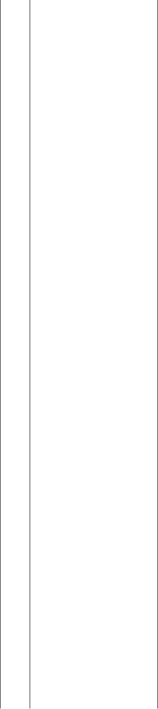

The Dread Factor:
How Hazards and Safety Training Influence Learning and Performance
Michael J. Burke
Tulane University
Rommel O. Salvador
University of Washington Tacoma
Kristin Smith-Crowe
University of Utah
Suzanne Chan-Serafin
University of New South Wales
Alexis Smith and Shirley Sonesh
Tulane University
On the basis of hypotheses derived from social and experiential learning theories, we meta-analytically
investigated how safety training and workplace hazards impact the development of safety knowledge and
safety performance. The results were consistent with an expected interaction between the level of
engagement of safety training and hazardous event/exposure severity in the promotion of safety
knowledge and performance. For safety knowledge and safety performance, highly engaging training was
considerably more effective than less engaging training when hazardous event/exposure severity was
high, whereas highly and less engaging training had comparable levels of effectiveness when hazardous
event/exposure severity was low. Implications of these findings for theory testing and incorporating
information on objective risk into workplace safety research and practice are discussed.
Keywords: safety training, occupational hazards, meta-analysis
In what has been described as the nation’s worst mining disaster
in 40 years (Cooper, 2010), 29 miners died and two more were
seriously injured in an explosion at the Upper Big Branch mine in
West Virginia on April 5, 2010 (Mining Safety and Health Ad-
ministration [MSHA], n.d.-b). In the years leading up to this
disaster, the Upper Big Branch mine was cited for a very large
number of MSHA violations (MSHA, n.d.-c). The pattern of
violations indicates several things. First, the Upper Big Branch
mine had significant and systematic safety-related problems prior
to the explosion on April 5, suggesting that the explosion was more
than a chance occurrence. Second, many of the problems were train-
ing related or training relevant. Of the violations specific to training
regulations, half were deemed to be significant and substantial,
meaning that there was a reasonable likelihood of these violations
resulting in serious injury or illness. Many more of the mine’s
violations, a large number of which deemed to be significant and
substantial, were relevant to the content of the training required for
miners. For instance, the mine was repeatedly in violation of 30
C.F.R. § 75.370 (mine ventilation plan; Mandatory Safety Stan-
dards Underground Coal Mines, 2008), 30 C.F.R. § 75.400 (accu-
mulation of combustible materials; Mandatory Safety Standards
Underground Coal Mines, 2008), 30 C.F.R. § 75.220 (roof control
plan; Mandatory Safety Standards Underground Coal Mines,
2008), and 30 C.F.R. § 75.202 (protection from falls of roof, face,
and ribs; Mandatory Safety Standards Underground Coal Mines,
2008), issues which were supposed to be part of the miners’ safety
training, as per federal regulations (MSHA, n.d.-d).
In the training plan submitted by Performance Coal Company,
the operator of the Upper Big Branch mine, and approved by
MSHA on March 29, 2007 (MSHA, n.d.-a), the methods employed
in the training courses for new and experienced miners are de-
scribed. For instance, self-rescuer and respiratory device training
for new miners is conducted via lecture, demonstrations, and
hands-on training:
Training will include instruction and demonstration in the use, care
and maintenance of the rescue and respiratory devices used at the
mine. Hands on training in the complete donning of all rescue devices
used at the mine, which includes assuming the donning position,
opening the device, activating the device, inserting the mouth, putting
the nose clip on and transferring between all rescue devices used at the
mine. (MSHA, n.d.-a, p. 4)
In contrast, the objectives covered in new miner training on roof
control and ventilation plans are conducted via lecture and visual
aids. The recent work of Burke et al. (2006) indicates that safety
Michael J. Burke, Freeman School of Business and Department of
Environmental Health Sciences, School of Public Health and Tropical
Medicine, Tulane University; Rommel O. Salvador, Milgard School of
Business, University of Washington Tacoma; Kristin Smith-Crowe, David
Eccles School of Business, University of Utah; Suzanne Chan-Serafin,
Australian School of Business, University of New South Wales, Sydney,
Australia; Alexis Smith and Shirley Sonesh, Freeman School of Business,
Tulane University.
Alexis Smith is now at the Anisfield School of Business, Ramapo
College of New Jersey.
Correspondence concerning this article should be addressed to Michael
J. Burke, Freeman School of Business, Tulane University, 7 McAlister
Drive, New Orleans, LA 70118. E-mail: mburke1@tulane.edu
Journal of Applied Psychology © 2011 American Psychological Association
2011, Vol. 96, No. 1, 46–70 0021-9010/11/$12.00 DOI: 10.1037/a0021838
46
training methodology has important implications for the effective-
ness of training in terms of trainee knowledge and performance.
Considering methodology alone, their findings suggest that the
more engaging methods used in the self-rescuer and respiratory
device training will have a greater effect on miner safety knowl-
edge and performance than will the less engaging methods used in
roof control and ventilation plans training. Indeed, most repeated
violations were in roof control and ventilation plans, the areas in
which miners were trained via less engaging methods.
Yet other factors may play a significant role in training effec-
tiveness; notably, the particular hazard or hazardous conditions
necessitating safety training are likely important. Currently, how-
ever, a gap exists in both the scientific and practice literatures as
to where and how to systematically incorporate information on the
severity or seriousness of injury, illness, and fatality potential (i.e.,
event/exposure information) into worker safety training efforts. In
terms of the example above, we do not know whether information
regarding exposure to harmful substances relevant to the use of
self-rescuer and respiratory devices suggests the need for a training
methodology (i.e., level of training engagement) different from
that for roof control and ventilation (i.e., where the event/exposure
may relate to rock falls or explosions). This shortcoming is notable
given that the nature of a hazard itself dictates what constitutes
safe work behavior, including when individuals should take pre-
cautions against a threat (Weinstein, 2000). Moreover, all theories
of health-protective behavior consider the nature of the hazard as
important in the creation of motivation for self-protection (see
Brewer et al., 2007; Kirscht, 1988; Prentice-Dunn & Rogers, 1986;
Rogers, 1983; Ronis, 1992).
The study reported here is an investigation of two variables—
hazardous events/exposures and safety training method—expected
to interact so as to affect knowledge acquisition and workplace
safety behavior. The aim of the study was to systematically ex-
amine expectations concerning how different types of objectively
determined hazardous events/exposures lead to enhanced learning
and behavioral outcomes when considered in the context of safety
training programs that vary in terms of social and experiential
activities (i.e., training method). Drawing on dialogical theories of
experiential learning and behavior and the literature on risk per-
ception, a central premise of this study was that the perception of
risk associated with different types of events/exposures is socially
and experientially engendered and that it creates motivation to
learn and transfer acquired knowledge to the job. While the pos-
itive effects of more socially engaging workforce training and
development interventions have been documented (see Burke et
al., 2006; Taylor, Russ-Eft, & Chan, 2005), the relationships
among safety training activities, objective event/exposure consid-
erations, and learning and performance outcomes have been
largely unarticulated and unexplored. Obtaining greater under-
standing of such associations is necessary for optimally designing
safety interventions to ultimately achieve desired outcomes, in-
cluding reduction in severe workplace injuries, illnesses, and fa-
talities. In this sense, our research is consistent with recent calls to
provide insights into organizational behavior more generally by
examining how social processes contribute to understanding orga-
nizational safety (e.g., see Barton & Sutcliffe, 2009; Turner &
Gray, 2009).
To unfold our study, we initially discuss aspects of risk. This
discussion provides definitions of key terms and indicates how
perceptions of risk are socially constructed. Subsequently, we
discuss social and experiential theories of learning and present
hypotheses concerning the relative effectiveness of different meth-
ods of safety training. Thereafter, we discuss how and why social
and experiential forms of training would be expected to enhance
the motivation to learn and the motivation to transfer training to
the job, especially in relation to the motivation to learn about and
avoid hazardous events and exposures of an ominous nature. Here,
we present hypotheses concerning interactive effects of safety
training engagement and objective hazardous events/exposures in
the explanation of safety training effectiveness for learning and
behavior.
Aspects of Risk and Evidence of the Social
Construction of Risk Perceptions
Over the past several decades, the literature on risk and risk
perception has burgeoned, with studies drawing on a variety of
disciplinary perspectives including political science, psychology,
sociology, and safety engineering (e.g., Roberts, 1997; Slovic,
1997; Weinstein, 2000). In general, these literatures consider ob-
jective risk or danger as the likelihood of harm (i.e., injury or
illness), with terms such as probability, susceptibility, and vulner-
ability used interchangeably. In the psychological literature, the
concern is often the likelihood of harm when no action or an
inappropriate action is taken (e.g., Weinstein, 2000). This aspect of
risk is typically considered to be distinct from the magnitude of the
negative outcome, or seriousness of harm if no action or an
inappropriate action is taken (see Slovic, 1987, 1997). Perceptions
of risk almost always include some assessment of the likelihood
and seriousness of harm or injury potential. Given that workers
have difficulty judging and interpreting probabilities (Brewer et
al., 2007), the literature has generally found that perceptions of risk
are more informative than objective indicators of risk in the
prediction of behavioral outcomes (e.g., Morrow & Crum, 1998).
Furthermore, a number of subgroup differences in risk perceptions
have been documented, including differences between males and
females (e.g., Barke, Jenkins-Smith, & Slovic, 1997; Greenberg &
Schneider, 1995), between supervisors and line workers (e.g.,
Weyman & Clarke, 2003), and among national/cultural groups of
workers in the same occupation (e.g., Perez-Floriano, 2001).
The fact that numerous subgroup differences in risk perceptions
exist (including documented differences within the same culture,
work setting, and occupation) demonstrates that the social con-
struction of risk beliefs are context bound. In fact, Pidgeon (1991)
and others (e.g., Fleming, Flin, Mearns, & Gordon, 1998; Perez-
Floriano & Gonzalez, 2007; Rundmo, 1996) have discussed no-
tions of safety subcultures and how these subcultures influence the
perception of risk and, ultimately, work behavior. More recently,
investigators have begun to explore social and experiential influ-
ences to better understand why different social groups (within the
same organization) appear to have different interpretations of risk
(e.g., Weyman & Clarke, 2003). While several studies have en-
hanced the understanding of how workers’ experiences relate to
risk perceptions, these investigations have generally neglected the
literature on dialogical theories of learning and behavior (e.g., see
Burke, Scheurer, & Meredith, 2007; Holman, 2000; Holman, Pav-
lica, & Thorpe, 1997). It is our belief that these latter learning
perspectives offer considerable theoretical insight for understand-
47
HAZARDS AND SAFETY TRAINING
ing the social construction of not only learning but also risk
perceptions and the motivation to learn. In the following section,
we discuss how learning is expected to occur within social con-
texts. We then discuss how different training methods (i.e., forms
of learning) would be expected to interact with hazardous events/
exposures in the development of perceptions of risks and the
motivation to learn.
Expectations From Dialogical Theories of Experiential
Learning and Behavior
Closely aligned with action theories and social learning theory
are the dialogical approaches to experiential learning. The dialog-
ical approaches highlight the social and contextual nature of learn-
ing and view thought, in large part, as a structured product (in the
sense of schemas and accounts) of the internalization of interper-
sonal action where language use plays an important role in this
process (Cunliffe, 2002; Holman, 2000). Although dialogical the-
orists recognize the role of individual differences and external
stimuli in shaping learning, their focus is on how learning about
objects and entities is achieved through a temporal flow of con-
tingent communication (Lave & Wenger, 1991; Schon, 1983; Weil
& McGill, 1989), how individuals develop and sustain ways of
verbally relating themselves to others, and how these communi-
cative interactions enable them to make sense of their surroundings
(Shotter, 1995; Wildemeersch, 1989). This point is particularly
relevant to occupational safety where occupations or industry
groups often develop their own jargon and symbols that convey
what is important to members (Hansen, 1995). For instance, haz-
ardous waste operations and emergency response trainees and
trainers have a rather elaborate manner of communicating hazard
information between each other (see Labor Institute, n.d.; Midwest
Consortium for Hazardous Waste Worker Training, 1992) that
involves numbers (e.g., 1 ϭ explosives, 2 ϭ gases), colors (e.g.,
yellow ϭ reactivity hazard, white ϭ special hazard), symbols (e.g.,
circle with flame ϭ oxidizing hazard, propeller ϭ radioactive
hazard), and acronyms (e.g., IDLH ϭ immediately dangerous to
life and health, PEL ϭ permissible exposure limit). These num-
bers, colors, symbols, and acronyms form an efficient means for
both verbal and nonverbal communications among hazardous
waste workers and emergency responders where the information
communicated is frequently of high importance in relation to
personal and public well-being.
The implication of a dialogical approach for the acquisition of
safety-related work skills is that learning methods that are more
engaging (in the sense of incorporating elements of action, dia-
logue, and reflection) will enhance knowledge acquisition relative
to less engaging (passive, more programmed) means of knowledge
development. In addition, more engaging methods of learning
would also be expected to force trainees to infer causal and
conditional relations between events and actions; in this way, such
methods can alter trainees’ ways of thinking and acting, particu-
larly in novel situations. Active approaches to learning, where
trainees are encouraged to learn from errors made, have been
shown to be positively related to the learning and adaptive transfer
of knowledge (e.g., see Bell & Kozlowski, 2008; Hacker, 2003;
Keith & Frese, 2008). In effect, more engaging forms of learning
are expected to not only improve knowledge acquisition in training
contexts but also promote the transfer of knowledge to the job,
especially in regard to the development of anticipatory thinking for
avoiding accidents in both routine and nonroutine types of work.
Burke et al. (2006) reported a meta-analysis that examined the
relative effectiveness of safety and health training methods accord-
ing to the extent to which trainees participated in the learning
process. Their meta-analytic findings were consistent with the
theoretical argument that as the method of safety and health
training becomes more engaging (going from passive, less engag-
ing methods, such as lecture, to experiential-based, highly engag-
ing methods, such as hands-on training that incorporates dialogue),
the training becomes more effective, resulting in greater knowl-
edge acquisition, a higher level of safety performance, and a
greater reduction in accidents and injuries.
Recently, the conclusions reached in Burke et al. (2006) were
brought into question by Robson et al. (2010), a team of research-
ers associated with Canada’s Institute for Work & Health and the
United States’s National Institute for Occupational Safety and
Health. On the basis of a highly selective qualitative review of 16
experimental studies, Robson et al. concluded that their review
team found insufficient evidence of high engagement training
having a greater impact on occupational health and safety-related
behaviors compared to low/medium engagement training. The
Robson et al. white paper is highly significant in terms of work-
place safety and public health as it conveys, from a governmental
perspective, what is believed to be the best scientific evidence on
worker safety training effectiveness relative to training engage-
ment.
Given the above theoretical arguments and empirical findings in
the literature concerning the effect of highly engaging forms of
training on learning and performance, the publication of 38 addi-
tional training studies since 2003, when Burke et al.’s (2006)
data-collection efforts concluded, and the recent government study
and policy statement by Robson et al. (2010) that questions the
relative effectiveness of highly engaging safety training in com-
parison to low/moderate engagement safety training, we construc-
tively replicated the investigation of Burke et al. in regard to the
training outcomes that are most relevant to this investigation (i.e.,
changes in knowledge and safety performance associated with
training). More specifically, we tested the following hypotheses:
Hypothesis 1: In comparison to less engaging safety training,
highly engaging safety training will be associated with greater
knowledge acquisition.
Hypothesis 2: In comparison to less engaging safety training,
highly engaging safety training will be associated with higher
safety performance.
The Social Construction of Dread
Arguments within dialogical theories of experiential learning
also provide a theoretical basis for understanding how safety-
relevant motivations (i.e., the motivation to learn and the motiva-
tion to transfer acquired knowledge) emerge within safety training
contexts. A key argument within dialogical theories of learning is
that through communication processes and social interaction, one
understands properties of objects and entities, including the risks
associated with different types of hazardous events and exposures.
Furthermore, communication and social interaction in highly en-
48
BURKE ET AL.
gaging forms of safety training (e.g., hands-on and experiential
based) typically provide rich, detailed information about hazardous
events and exposures and frequently demonstrate the health con-
sequences of exposures. In contrast, less engaging forms of train-
ing, such as lecture and programmed learning, present limited
opportunities for social interaction or action, dialogue, and reflec-
tion in relation to hazard exposures.
When hazardous events and exposures are of an ominous nature
(e.g., fires and explosions; exposure to toxic chemicals, radiation,
or HIV; see Mullet, Cuitad, & Riviere-Shafighi, 2004), the action,
dialogue, and considerable reflection that take place in the highly
engaging forms of training would be expected to engender dread,
a realization of the dangers in the work context and associated
negative affect. This realization of injury/illness vulnerability and
the experienced feelings or affect should play a primary role in
motivating individuals to learn about how to avoid exposure to
such hazards. The arguments that cognitions and affect play direct
and primary roles in motivating learning and behavior are not new
(e.g., see Tennyson & Jorczak, 2008, for a discussion of the
interactive cognitive complexity learning model). In particular,
scholars across disciplines have theorized and found empirical
support for the idea that unpleasant feelings can motivate people to
act in ways that they think will minimize such feelings or avoid the
negative consequences associated with inaction (e.g., see Baumeis-
ter, Vohs, DeWall, & Zhang, 2007; Beer, Heerey, Keltner, Scabini,
& Knight, 2003; Schwartz & Clore, 1988; Slovic & Peters, 2006;
Sweeny & Shepperd, 2007; Warren & Smith-Crowe, 2008). How-
ever, while we would expect the unpleasant feelings and thoughts
in relation to ominous hazards to be especially at the forefront of
workers’ subjective experiences in highly engaging training, we do
not expect such thoughts and reactions to necessarily divert atten-
tional resources away from knowledge acquisition. The active
approach to learning within highly engaging forms of training
should assist with the regulation of negative emotions by focusing
attention on the means to cope with or avoid the danger. Unlike
heightened levels of anxiety that have been shown to negatively
relate to the motivation to learn in general training contexts (see
Colquitt, LePine, & Noe, 2000), the dread factor would be ex-
pected to enhance the motivation to learn within highly engaging
forms of safety training and with respect to hazards of an ominous
nature. Thus, we would expect an increase in training engagement
to have a substantial effect on training outcomes when hazardous
event/exposure does have severe injury or illness potential.
In contrast, when hazardous events and exposures do not have
severe injury potential (e.g., contact with objects and equipment,
excessive physical effort, or repetitive bodily motion), we would
not expect the dread factor to be produced in highly engaging
forms of training. Elevated levels of affect would not necessarily
be expected to occur in relation to actively learning about these
types of hazards. Similarly, while less engaging forms of safety
training would be expected to inform trainees of the nature of
particular hazards, these types of training would also not be ex-
pected to engender affective reactions in relation to possible ex-
posure to hazards of any nature. That is, the usual limited oppor-
tunities for social interaction within less engaging training would
be expected to lessen the social construction of motivation to learn
about the hazardous events and exposures irrespective of the
potential severity of the event/exposure and, consequently, lessen
the motivation to transfer this knowledge to the work setting. Thus,
we would expect only modestly improved training outcomes in
highly engaging as compared to less engaging safety training when
hazardous event/exposure does not have severe injury or illness
potential.
Together, the above conceptual arguments undergird the follow-
ing hypotheses:
Hypothesis 3: Hazardous event/exposure severity moderates
the relationship between training engagement and knowledge
acquisition, such that the relationship is stronger for events/
exposures that are more likely to produce or inflict severe
injury, illness, or death in comparison to events/exposures
that are less likely to produce or inflict severe injury, illness,
or death.
Hypothesis 4: Hazardous event/exposure severity moderates
the relationship between training engagement and safety per-
formance, such that the relationship is stronger for events/
exposures that are more likely to produce or inflict severe
injury, illness, or death in comparison to events/exposures
that are less likely to produce or inflict severe injury, illness,
or death.
Method
Search and Inclusion Criteria
Initially, potentially relevant articles published between 1971
(immediately following the passage of the 1970 U.S. Occupational
Safety and Health Act) and December 2008 were identified via
searches of electronic databases (including PubMed, PsycINFO,
and Google Scholar) using the following key words: health and
safety training, health training intervention, safety training inter-
vention, safety training, health training, error management and
intervention, error prevention and intervention, safety interven-
tion, health intervention, occupational health and safety, needle-
stick, NIOSH and intervention, and OSHA and intervention. We
also manually searched each of the following journals: Accident
Analysis & Prevention, American Journal of Industrial Medicine,
American Journal of Infection Control, American Journal of Pub-
lic Health, Ergonomics, Journal of Applied Psychology, Journal of
Occupational and Environmental Hygiene, Journal of Occupa-
tional and Environmental Medicine, Journal of Safety Research,
Infection Control in Hospital Epidemiology, Personnel Psychol-
ogy, Safety Science, Scandinavian Journal of Work, and Environ-
ment and Health. Furthermore, the reference lists of each qualita-
tive and quantitative review found were searched to identify any
relevant articles cited in these documents. Through this process,
we identified over 800 potentially relevant articles reporting safety
training research in primarily the health care, agriculture, manu-
facturing, and construction industries.
Studies were included in the analysis if they met certain criteria.
First, studies had to be quasi-experimental or experimental studies,
meaning that they had to involve an experimental intervention and
observation of its effects. Second, participants in the studies could
be of any age but had to be from a working population (the sample
included mostly adults and some youth workers). Third, the fol-
lowing elements needed to be clearly identified: the method of
training (i.e., high, moderate, or low levels of engagement), the
49
HAZARDS AND SAFETY TRAINING
nature of the workplace hazard (e.g., falls, contact with objects, or
exposure to dangerous substances), and the dependent variables
(safety knowledge and safety performance). Fourth, studies had to
be conducted at the individual level of analysis such that the
intervention focused on improving individual workers’ safety
knowledge and performance.
Coding of Studies
Having identified the studies to be included, we coded the
studies to address our main research questions. Our primary inter-
ests in this investigation were (a) to examine the previously noted
effect of training method (i.e., level of engagement) on workers’
safety-related knowledge and performance (see Burke et al., 2006)
and (b) to determine whether the severity of the hazardous event/
exposure in workers’ environments moderates the relationships
between level of training engagement and learning and perfor-
mance outcomes. Each study was coded for training method,
safety-related knowledge, and performance by two independent
coders; discrepancies were resolved by a third consensus coder.
Each study was coded for hazardous event/exposure by two dif-
ferent independent coders; discrepancies were resolved by the
same third consensus coder. In this way, four coders independently
coded each study, and the hazard data were coded independently
from the rest of the data.
To address the first question of interest, we recorded several
pieces of information from our primary studies. First, we recorded
the method of training used in each primary study. Specifically,
following Burke et al.’s (2006) categorization, the method of
training was initially divided into three groups: least engaging
(e.g., lectures, films, reading materials, and video-based training),
moderately engaging (e.g., programmed or computer-interface in-
struction with feedback), and most engaging (e.g., behavioral
modeling, simulation, and hands-on training). If studies reported
using more than one method of training, the most engaging level
of training received by all participants was recorded. Because tests
of hypotheses in this investigation focused on distinctions between
the highly engaging forms of training and less engaging training,
the latter of which does not include opportunities for action,
dialogue, and considerable reflection (i.e., Burke et al.’s, 2006,
least and moderately engaging methods of safety training), we
collapsed the least engaging and moderately engaging categories
into what we refer to as the less engaging methods.
Second, changes in participants’ safety-related outcomes, our
dependent variables, were coded. The dependent variables were
safety-related knowledge acquisition (i.e., differences in test per-
formance or self-reports between the target group and either a
control group or a baseline measure) and behavioral safety perfor-
mance (i.e., differences in observed or self-reported behaviors
between the target group and either a control group or a baseline
measure). In the cases where primary studies reported effects on
both dependent variables, we coded both effects separately and
included the effects in separate meta-analyses; no sample was
represented more than once within a given meta-analysis. Also,
when available, the reliability of the dependent variables was
recorded (internal consistency reliability estimates for knowledge
measures and, typically, interrater reliability estimates for perfor-
mance measures).
Third, to address our second research question, we coded haz-
ards in the workplace. We began by using the U.S. Bureau of
Labor Statistics’ Occupational Injury and Illness Classification
System (OIICS) to sort hazards into seven categories that describe
the manner in which an injury or illness is produced or inflicted by
the source of the injury or illness (Biddle, 1998). An eighth
category is reserved for other hazards that do not fit within the
system. Within the OIICS, the seven categories are hierarchically
arranged to reflect the increasing potential for severe illness,
injury, or death due to the hazardous event or exposure: contact
with objects (Category 1), falls (Category 2), bodily reaction and
exertion (Category 3), exposure to harmful substances and envi-
ronments (Category 4), transportation accidents (Category 5), fires
and explosions (Category 6), and assaults and violent acts (Cate-
gory 7). This hierarchical ordering of events/exposures roughly
corresponds to the ordering of occupations and industries in terms
of the number of nonfatal and fatal injuries within the Bureau of
Labor Statistics annual workforce injury and illness reports. In this
sense, this hazard scoring system does reflect, to a degree, the
objective likelihood of injury or illness in terms of nonfatal and
fatal injuries per thousand workers when an event/exposure occurs.
When studies reported multiple hazards, we recorded the highest
ranked event/exposure. In studies that did not explicitly state the
type of hazard, we inferred the nature of the hazard based upon the
content of the training intervention.
Furthermore, the Bureau of Labor Statistics’ OIICS considers
events involving transportation accidents, fires and explosions, and
assaults and violent acts (i.e., Categories 5, 6, and 7) as taking
precedence in terms of severity over all other categories. As
discussed above, these types of events/exposures would be ex-
pected to, in combination with highly engaging training, induce
dread and motivation to learn. In addition, Category 4, which
concerns exposures to harmful substances (e.g., toxic chemicals,
radiation) and environments (e.g., depletion of oxygen in enclosed,
restricted, or confined spaces), would also be considered to be
more ominous in nature. The remaining categories, consistent with
the OIICS classification as hierarchically lower in terms of the
seriousness (and likelihood) of event/exposure, would not neces-
sarily be considered ominous in nature. Therefore, for the purposes
of our analyses, we scored hazards within Categories 4, 5, 6, and
7 as one (high hazards) and hazards within Categories 1, 2, and 3
as zero (low hazards). In effect, this dichotomy allowed us to
highlight the point at which the consequences of hazards go from
typically being less severe (e.g., slips, overexertion, and repetitive
motion within the third most severe hazard category: bodily reac-
tion and exertion) to being more severe (e.g., the contraction of
hepatitis or HIV resulting from needle sticks within the fourth
most severe hazard category: exposure to harmful substances and
environments). Notably, this scoring of hazardous event/exposure
in terms of low and high severity roughly corresponds to splitting
the Bureau of Labor’s ranking system at the midpoint of the OCIIS
hierarchy. While we adopted this system for the scoring of work-
place hazards, we recognize that fatalities can and do occur in
relation to hazards classified as low hazards. Our scoring system
and that of the OCIIS reflect the typical level of severity and
likelihood associated with a hazardous exposure or event (e.g.,
most slips and falls are nonfatal).
For level of engagement in safety training, we scored safety
training as one (highly engaging training) or zero (less engaging
50
BURKE ET AL.
training) for tests of all hypotheses This scoring was dictated by
our theoretical arguments in relation to the dread factor being
engendered only within the highly engaging methods of training
that encourage action, dialogue, and reflection (i.e., behavioral
modeling, hands-on, and simulation-based training) and with re-
spect to hazards of an ominous nature (i.e., those within the top
four OCIIS categories).
Intercoder agreement was very high (at least 90%) for the
coding of both training intervention and hazardous event/exposure,
and any disagreements were resolved by a third coder. In this
manner, a consensus code was obtained for both the level of
engagement of safety training and the nature of the hazardous
event/exposure.
Statistical Analyses
To compute the effect of safety training for knowledge or safety
performance, d statistics were computed using equations from
Shadish, Robinson, and Lu (1999) and Lipsey and Wilson (2001).
Using information provided in the primary studies, the majority of
studies provided enough information to perform straightforward
d-statistic calculations. Several studies, however, reported results
in proportions or percentages or with respect to analysis of vari-
ance designs. For instance, in the case of proportions, we estimated
d statistics via arcsine transformations (see Lipsey & Wilson,
2001). Importantly, for both single-group and independent-groups
designs, we computed effect sizes to ensure that all effects were in
the same raw-score effect-size metric (see Morris, 2008; Morris &
DeShon, 2002). Given minimal differences in mean effects be-
tween single-group and independent-groups designs within the
domain of workplace safety training (see Burke et al., 2006, for a
detailed comparison of meta-analytic results for within- vs.
between-subjects designs), we did not distinguish between study
design features for the purposes of testing the present hypotheses.
We note that in some cases, we computed effects different from the
original study design due to insufficient reporting of data or data
that would produce out-of-bound effect-size estimates. For in-
stance, while Peterson, McGlothlin, and Blue’s (2004) study was
based on pre–post design with a control group, the authors did not
report findings for the control group, which necessitated treating
this study as a within-subjects design.
The meta-analysis procedure used was Raju, Burke, Normand,
and Langlois’s ([RBNL] 1991) method. The RBNL method was
chosen because of its ability to appropriately correct for unreli-
ability in the measure of the dependent variable whenever a
primary study reliability estimate was available and in whatever
proportion reliabilities were available within a meta-analytic dis-
tribution of effects. Moreover, the RBNL meta-analytic procedure
was chosen for its unique ability to estimate standard errors for
individually corrected correlations with and without sample-based
dependent variable reliabilities. To correct observed training ef-
fects when a primary study did not report a reliability estimate, we
relied on the overall, sample-size weighted average reliability
estimates for knowledge and performance measures of .73 and .88,
respectively. In addition, the RBNL procedures permit the estima-
tion of confidence intervals around mean corrected effects based
on a random effects estimate of the standard error of the mean
corrected effect. Due to statistical advantages of working with
correlations (i.e., asymptotic estimates of standard errors for indi-
vidually corrected effects can be made for correlation coefficients
and appropriately defined standard errors can be computed for
mean corrected correlations; see Burke & Landis, 2003; Raju &
Brand, 2003), we converted observed d statistics to correlation
coefficients before conducting the meta-analyses. For the purposes
of this article, we report results in correlation form and, where
appropriate in the Discussion section, we discuss these effects in
terms of standardized differences (i.e., d statistics).
Given the variances in the effect sizes in each of the eight
Hazard Level ϫ Training Method distributions and noting the
potential for outliers to have a large effect on these variances, we
also conducted outlier analyses. Specifically, we used the sample-
adjusted meta-analytic deviancy (SAMD; Huffcutt & Arthur,
1995) statistic to check for outliers in these distributions. Given
potential bias in results based on the sole use of the SAMD statistic
(see Beal, Corey, & Dunlap, 2002), we also examined how close
the SAMD values were in determining whether an effect was a true
outlier. In total, five studies were identified as outliers, and each
outlier was from a different combination of training engagement
and hazard level (i.e., one outlier was identified in each of five of
the eight combinations of training engagement, hazard level, and
safety-related outcome). On the basis of the inclusion criteria and
the outlier analyses, we included a total of 113 primary studies that
had 147 independent samples and 166 safety training effects, with
a total sample size of 24,694 from 16 countries. Notably, the
number of studies included in this investigation for tests of Hy-
potheses 1 and 2 represents a 45% increase over the number of
studies with safety knowledge and safety performance as depen-
dent measures included in Burke et al. (2006).
For tests of Hypotheses 1 and 2, we compared estimated mean
effects for less and highly engaging methods of safety training for
knowledge and performance, respectively. We performed these
tests to evaluate the consistency of our findings with the earlier
reported meta-analysis by Burke et al. (2006). For tests of Hypoth-
eses 3 and 4, we tested for the expected interaction within a
meta-analytic context using the common subgrouping technique
(see Hunter & Schmidt, 2004). This moderator detection technique
is useful when considering dichotomous moderators and when
independent variables are uncorrelated (see Steel & Kammeyer-
Mueller, 2002). In this regard, we note that the phi coefficient
between training engagement and hazardous event/exposure was
Ϫ.13 and statistically nonsignificant. When subgrouping studies,
we first classified training effects into low and high hazardous
event/exposure separately for knowledge and performance effects.
Then, we computed the mean training effect (i.e., mean corrected
correlation) for less engaging training and for highly engaging
training within each hazard condition. When comparing mean
effects for less and highly engaging training within a hazard
condition, we examined whether the respective 95% confidence
intervals (based on the random effects estimate of the standard
error for the mean corrected correlation; see Burke & Landis,
2003) around the estimated mean effects overlapped. Importantly,
we note that the standard error for the mean corrected effect
included information on the standard errors for individually cor-
rected effects within a distribution of effects, as well as informa-
tion on the between-study variance in effects within that distribu-
tion.
51
HAZARDS AND SAFETY TRAINING
Results
Table 1 lists the studies we included and coded in this meta-
analysis along with some descriptive information.
Table 2 presents a summary of the meta-analytic results exam-
ining the effects of safety training method on knowledge acquisi-
tion and safety performance. Among the results presented are the
estimated mean correlations corrected for dependent variable un-
reliability (M
), the 95% confidence interval around the estimated
mean (95% CI M
), and the estimated variance of the effects (V
).
We also present parallel results based on uncorrected correlations
in Table 2. As both sets of results are analogous and consistent
with each other, we refer to the corrected (disattenuated) results in
testing the hypotheses.
According to Hypothesis 1, highly engaging training will be
associated with greater safety knowledge acquisition, compared to
less engaging training. As shown in Table 2, the mean training
effect size, M
, is greater when training method is highly engaging
than when training method is less engaging (M
ϭ .61 for the
highly engaging methods compared to M
ϭ .36 for the less
engaging methods). The nonoverlapping 95% confidence intervals
around M
suggest that highly engaging methods are much more
effective than the less engaging methods in increasing safety
knowledge acquisition. Thus, Hypothesis 1 is supported.
In addition, the results also provide support for Hypothesis 2.
Highly engaging safety training is associated with a higher level of
safety performance compared to less engaging training. With ref-
erence to Table 2, the average training effect size is greater when
training method is highly engaging than when training method is
less engaging (M
ϭ .42 for the highly engaging methods com-
pared to M
ϭ .22 for the less engaging methods). As with safety
knowledge, the nonoverlapping 95% confidence intervals around
M
suggest that highly engaging methods are much more effective
than the less engaging methods in improving safety performance.
Table 3 presents a summary of the meta-analytic results exam-
ining the interaction between training method and hazardous
event/exposure. These results are consistent with Hypotheses 3 and
4. Hypothesis 3 predicts that the level of hazardous event/exposure
in the work context will moderate the relationship between training
engagement and knowledge acquisition, such that the relationships
between level of engagement and training effectiveness will be
stronger under high hazard conditions (i.e., when events/exposures
have a greater potential of producing severe injury, illness, or
death) than under low hazard conditions (i.e., when events and
exposures in the occupational context are less likely to result in
serious injury, illness, or death). In other words, in terms of safety
knowledge acquisition, Hypothesis 3 predicts that the effectiveness
of highly engaging training methods relative to the less engaging
training methods will be amplified under high hazard conditions,
as opposed to the low hazard conditions.
For Hypothesis 3, the mean training effect size for the less
engaging methods (M
ϭ .53) is slightly greater than the mean
effect for highly engaging methods (M
ϭ .47) under the low
hazard condition. Notably, the mean effect associated with the
highly engaging methods (.47) is part of the 95% confidence
interval around the mean effect associated with the less engaging
methods, that is, [.37, .70]. Similarly, the mean effect of the less
engaging methods (.53) falls within the 95% confidence interval
around the mean effect associated with the highly engaging meth-
ods, [.33, .61]. Thus, although the mean effect of the less engaging
methods is numerically greater than that of the more engaging
methods under the low hazard condition, there is an insufficient
statistical basis to conclude that the mean effect of .47 is signifi-
cantly different from the mean effect of .53. Whereas we expected
to see a modest increase in training effectiveness across levels of
engagement within the low hazard condition, we did not see such
an increase.
On the other hand, under the high hazard condition, the mean
training effect for highly engaging methods (M
ϭ .65) is signif-
icantly higher than the mean training effect for less engaging
methods (M
ϭ .36), as evidenced by the nonoverlapping 95%
confidence intervals ([.31, .41] for the less engaging methods and
[.58, .71] for the highly engaging methods). Collectively, these
pieces of evidence suggest that in terms of increasing safety
knowledge, the effectiveness of highly engaging training methods
relative to the less engaging training methods is more pronounced
under conditions of high hazards than under conditions of low
hazards. Thus, the meta-analytic data are consistent with Hypoth-
esis 3.
Analogously, Hypothesis 4 predicts that in terms of safety
performance, the effectiveness of highly engaging training meth-
ods relative to the less engaging training methods will be amplified
under high hazard conditions as opposed to the low hazard con-
ditions. With reference to the safety performance meta-analytic
results in Table 3, the mean training effect size for the less
engaging methods (M
ϭ .31) is essentially the same as the mean
effect for highly engaging methods (M
ϭ .32) under the low
hazard condition. The mean effect associated with the less engag-
ing methods falls within the 95% confidence interval, [.23, .41],
around the mean effect for the highly engaging methods. Likewise,
the mean effect associated with the highly engaging methods falls
within the 95% confidence interval for the less engaging methods,
[.24, .37]. These confidence intervals suggest that the two mean
effects, .31 and .32, are not significantly different from each other.
Here, too, we expected to see a modest increase in training effec-
tiveness across levels of engagement within the low hazard con-
dition; instead, we found no significant increase.
In contrast, under the high hazard conditions, the mean training
effect for highly engaging methods (M
ϭ .46) is significantly
higher than the mean training effect for less engaging methods
(M
ϭ .20), as evidenced by the nonoverlapping 95% confidence
intervals ([.16, .25] for the less engaging methods and [.39, .53] for
the highly engaging methods). Notably, the confidence interval
around the mean effect of .46 for highly engaging training is
outside (i.e., above) the confidence intervals for all other mean
effects concerning safety performance. Taken together, these
pieces of evidence suggest that in terms of enhancing safety
performance, the effectiveness of highly engaging training meth-
ods relative to the less engaging training methods is more pro-
nounced under conditions of high hazards than under conditions of
low hazards. Hence, the meta-analytic evidence is consistent with
Hypothesis 4.
Discussion
Our hypotheses for this investigation concern two issues: (a) the
extent to which the level of training engagement in safety training
influences knowledge acquisition and safety performance, and (b)
52
BURKE ET AL.
Table 1
Studies Included in the Meta-Analysis
Study N Country Study design
a
Participant occupation Method of safety training
b
Type of hazard
Dependent variable
reliability
c
Dependent
variable
Alavosius & Sulzer-
Azaroff (1986)
6 USA Pre–post, w/o control
group
Direct care staff workers
(for physically
handicapped clients)
Written and verbal feedback Bodily reaction and
exertion
.89 Performance
Albers et al. (1997) 34 USA Posttest only,
comparison
Carpenter apprentices Lecture, discussion, feedback,
hands-on practice
Bodily reaction and
exertion
Knowledge
Al-Hemoud & Al-Asfoor
(2006)
21 Kuwait Pre–post, w/control
group
Industrial engineers Feedback Bodily reaction and
exertion
.89 Performance
Anger et al. (2006) 51 USA Pre–post, w/o control
group
Agricultural workforce
(orchard workers)
Computer-based programmed
instruction
Falls .90 Knowledge &
performance
Arcury, Quandt, Austin,
Preisser, & Cabrera
(1999)
270 USA Posttest only,
comparison
Farm workers Lecture, video Exposure to harmful
substances or
environments
Knowledge &
performance
Askari & Mehring (1992) 100 USA Pre–post, w/o control
group
Health care workers Feedback Exposure to harmful
substances or
environments
Knowledge
Azizi et al. (2000) 72 Israel Pre–post, w/control
group
Outdoor water resources
workers
Lecture, slide presentation,
brochures
Exposure to harmful
substances or
environments
Performance
Baker (1998) 6 USA Pre–post, w/o control
group
Direct care staff workers
for clients with physical
or mental disabilities
Videotaped segments and
vignettes, discussion,
hands-on/simulation
training, feedback
Exposure to harmful
substances or
environments
1.00 Performance
Barnett et al. (1984) 110 USA Pre–post, w/o control
group
Farm workers Slideshow presentation,
brochure
Exposure to harmful
substances or
environments
Knowledge
Bosco & Wagner (1988) 209 USA Posttest only,
comparison
Auto manufacturing
workers
Lecture, videotape, computer-
based training
Exposure to harmful
substances or
environments
.66 Knowledge
Brnich, Derick, Mallett, &
Vaught (2002)
178 USA Pre–post, w/o control
group
Miners Lecture, discussion, video
presentation
Fires and explosions Knowledge
Calabro, Weltge, Parnell,
Kouzekanani, &
Ramirez (1998)
172 USA Pre–post, w/o control
group
Medical students Lecture, discussion,
behavioral modeling (role-
play), case studies
Exposure to harmful
substances or
environments
Knowledge
Caparaz, Rice, Graumlich,
Radike, & Morawetz
(1990)
9 USA Pre–post, w/o control
group
Foundry/maintenance
workers
Lecture, small group
discussion, workbook
exercises
Exposure to harmful
substances or
environments
Knowledge
Carlton (1987) 30 USA Posttest only,
comparison
Food service employees Behavioral modeling,
feedback
Bodily reaction and
exertion
.96 Knowledge
30 USA Posttest only,
comparison
Food service employees Behavioral modeling,
feedback
Bodily reaction and
exertion
.96 Performance
Carrabba, Field,
Tormoehlen, & Talbert
(2000)
212 USA Posttest only,
comparison
4-H tractor program
members
Exercise, feedback Transportation
accidents
Performance
Chaffin, Gallay, Wooley,
& Kuciemba (1986)
26 USA Pre–post, w/o control
group
Warehouse employees Lecture, discussion, video Bodily reaction and
exertion
Performance
(table continues)
53
HAZARDS AND SAFETY TRAINING

Table 1 (continued)
Study N Country Study design
a
Participant occupation Method of safety training
b
Type of hazard
Dependent variable
reliability
c
Dependent
variable
Chhokar & Wallin (1984) 58 USA Pre–post, w/o control
group
Heat exchanger
manufacturing and
repairing plant workers
Slideshow, feedback, goal-
setting
Exposure to harmful
substances or
environments
.93 Performance
Cohen & Jensen (1984) 24 USA Pre–post, w/control
group
Lift truck operators
(Warehouse 1)
Behavioral modeling Transportation
accidents
.90 Performance
48 USA Pre–post, w/control
group
Lift truck operators
(Warehouse 2)
Behavioral modeling Transportation
accidents
Performance
Cole et al. (1988) 36 USA Pre–post, w/control
group
Coal miners Task demonstration, hands-on
training
Fires and explosions Performance
Coutts, Graham, Braun, &
Wells (2000)
33 Canada Pre–post, w/o control
group
Bar staff Lecture, discussion, video,
case study, exercises, role
playing
Assaults and violent
acts
Knowledge
Curwick, Reeb-Whitaker,
& Connon (2003)
30 USA Pre–post, w/o control
group
Various manufacturing-
related occupations
Hands-on (with simulation
training)
Bodily reaction and
exertion
Knowledge
Daltroy et al. (1993) 178 USA Posttest only,
comparison
Postal workers Lecture, discussion, slides,
hands-on training, feedback
on the job
Bodily reaction and
exertion
Knowledge
DeVries, Burnette, &
Redmon (1991)
4 USA Pre–post, w/o control
group
Nursing Feedback Exposure to harmful
substances or
environments
.98 Performance
Dortch & Trombly (1990) 12 USA Pre–post, w/control
group
Electronic assembly
workers
Lecture, discussion, handout Bodily reaction and
exertion
.83 Performance
11 USA Pre–post, w/control
group
Electronic assembly
workers
Lecture, discussion, handout,
simulation
Bodily reaction and
exertion
.83 Performance
Eckerman et al. (2002) 60 USA Posttest only,
comparison
Various occupations Computer-based programmed
instruction
Exposure to harmful
substance or
environments
Knowledge
Eckerman et al. (2004) 73 USA Pre–post, w/o control
group
Food service workers at a
hospital
Behavioral modeling Exposure to harmful
substances or
environments
Knowledge &
performance
Engels, Van der Gulden,
Senden, Kolk, &
Binkhorst (1998)
18 Netherlands Pre–post, w/control
group
Nursing Feedback Bodily reaction and
exertion
Performance
Ewigman, Kivlahan,
Hosokawa, & Horman
(1990)
94 USA Pre–post, w/o control
group
Firefighters Lecture, discussion, handouts,
posters, video
Exposure to harmful
substances or
environments
Knowledge &
performance
Finch & Daniel (2005) 276 USA Pre–post, w/o control
group
Emergency food relief
organization workers
Lecture/discussion Exposure to harmful
substances or
environments
Knowledge
Forst et al. (2004) 239 USA Pre–post, w/control
group
Community health
workers
Hands-on (with simulation
training)
Exposure to harmful
substances or
environments
Performance
54
BURKE ET AL.

Table 1 (continued)
Study N Country Study design
a
Participant occupation Method of safety training
b
Type of hazard
Dependent variable
reliability
c
Dependent
variable
Fox & Sulzer-Azaroff
(1987)
12 USA Pre–post, w/o control
group
Paper mill foremen Feedback Bodily reaction and
exertion
.97 Performance
Froom, Kristal-Boneh,
Melamed, Shalom, &
Ribak (1998)
167 Israel Pre–post, w/control
group
Medical students Lecture Exposure to harmful
substances or
environments
Performance
Gagnon (2003) 10 Canada Pre–post, w/o control
group
Physical education
students doing manual
handling
Hands-on (with simulation
training)
Bodily reaction and
exertion
.80 Performance
Gerbert et al. (1988) 99 USA Pre–post, w/control
group
Dentists Bulletins, discussion,
feedback
Exposure to harmful
substances or
environments
Knowledge &
performance
Girgis, Sanson, & Watson
(1994)
142 Australia Pre–post, w/control
group
Electrical company
outdoor workers
Lecture, discussion,
pamphlets
Exposure to harmful
substances or
environments
Knowledge &
performance
Goldrick (1989) 78 USA Pre–post, w/o control
group
Nurses Computer-based programmed
instruction
Exposure to harmful
substances or
environments
.60 Knowledge
66 USA Pre–post, w/o control
group
Nurses Lecture Exposure to harmful
substances or
environments
.60 Knowledge
Greene, DeJoy, & Olejnik
(2005)
82 USA Pre–post, w/control
group
University employees
(computer users)
Feedback Bodily reaction and
exertion
Performance
Harrington & Walker
(2002)
20 USA Pre–post, w/o control
group
Administrative staff at
life-care community
facility
Instructor-led lecture and
discussion (fire behavior
module)
Fires and explosions .79 Knowledge
42 USA Pre–post, w/control
group
Administrative staff at
life-care community
facility
Computer-based programmed
instruction (fire hazard
module)
Fires and explosions .72 Knowledge
Harrington & Walker
(2003)
37 USA Pre–post, w/o control
group
Nursing facility staff Computer-based programmed
instruction (need for fire
safety module)
Fires and explosions Knowledge
31 USA Pre–post, w/o control
group
Nursing facility staff Instructor-led lecture and
discussion (need for fire
safety module)
Fires and explosions Knowledge
44 USA Pre–post, w/o control
group
Nursing facility staff Computer-based programmed
instruction (human factors
in fire module)
Fires and explosions Knowledge
38 USA Pre–post, w/o control
group
Nursing facility staff Instructor-led lecture and
discussion (human factors
in fire module)
Fires and explosions Knowledge
40 USA Pre–post, w/o control
group
Nursing facility staff Computer-based programmed
instruction (fire emergency
planning module)
Fires and explosions Knowledge
36 USA Pre–post, w/o control
group
Nursing facility staff Instructor-led lecture and
discussion (fire emergency
planning module)
Fires and explosions Knowledge
31 USA Pre–post, w/o control
group
Nursing facility staff Computer-based programmed
instruction (fire safety
devices module)
Fires and explosions Knowledge
(table continues)
55
HAZARDS AND SAFETY TRAINING
Table 1 (continued)
Study N Country Study design
a
Participant occupation Method of safety training
b
Type of hazard
Dependent variable
reliability
c
Dependent
variable
32 USA Pre–post, w/o control
group
Nursing facility staff Instructor-led lecture and
discussion (fire safety
devices module)
Fires and explosions Knowledge
Harrington & Walker
(2004)
670 USA Pre–post, w/o control
group
Staff from a life-care
community/nursing
community
Computer-based programmed
instruction
Fires and explosions .76 Knowledge
624 USA Pre–post, w/o control
group
Staff from a life-care
community/nursing
community
Instructor-led lecture and
discussion
Fires and explosions Knowledge
Held, Mygind, Wolff,
Gynterlberg, & Agner
(2002)
287 Denmark Pre–post, w/control
group
Wetwork employees Behavioral modeling Exposure to harmful
substances or
environments
Performance
Hickman & Geller (2003) 15 USA Pre–post, w/control
group
Miners Feedback Exposure to harmful
substances or
environments
.97 Knowledge
Hong, Ronis, Lusk, & Kee
(2006)
403 USA Pre–post, w/control
group
Engineers on construction
sites
Computer-based programmed
instruction
Exposure to harmful
substances or
environments
Performance
Hopkins (1984) 6 USA Pre–post, w/o control
group
Plastics manufacturing
plant workers
Feedback Exposure to harmful
substances or
environments
.99 Performance
Huang et al. (2002) 98 China Pre–post, w/control
group
Hospital nurses Behavioral modeling Exposure to harmful
substances or
environments
Knowledge &
performance
Hultman, Nordin, &
Ortengren (1984)
6 Sweden Pre–post, w/o control
group
Janitors Hands-on training
(simulation), feedback
Bodily reaction and
exertion
Performance
Hurlebaus & Link (1997) 22 USA Pre–post, w/o control
group
Nurses Discussion, handouts,
behavioral modeling,
hands-on training
(supervised practice)
Assaults and violent
acts
Knowledge
Inman & Blanciforti
(2002)
106 USA Pre–post, w/control
group
Carpenters Lecture, reminders, posters Contact with objects Performance
Jensen & Friche (2007) 208 Denmark Pre–post, w/o control
group
Floor layers Hands-on (with simulation
training)
Bodily reaction and
exertion
Performance
Johnsson, Carlosson, &
Lagerstrom (2002)
49 Sweden Posttest only,
comparison
Hospital and home care
personnel
Feedback Bodily reaction and
exertion
.91 Performance
Kerrigan et al. (2006) 206 Dominican
Republic
Pre–post, w/o control
group
Sex workers (Santo
Domingo)
Lecture/discussion Exposure to harmful
substances or
environments
Performance
200 Dominican
Republic
Pre–post, w/o control
group
Sex workers (Puerto Plata) Lecture/discussion Exposure to harmful
substances or
environments
Performance
Knobloch & Broste (1998) 691 USA Pre–post, w/control
group
Agricultural workers Lecture, discussion, videos,
behavioral prompts (e.g.,
direct mailings), feedback,
hands-on training
(supervised practice)
Exposure to harmful
substances or
environments
Performance
56
BURKE ET AL.

Table 1 (continued)
Study N Country Study design
a
Participant occupation Method of safety training
b
Type of hazard
Dependent variable
reliability
c
Dependent
variable
Komaki, Barwick, & Scott
(1978)
22 USA Pre–post, w/o control
group
Bakery workers (wrapping
department)
Slideshow, discussion,
feedback
Contact with objects .99 Performance
16 USA Pre–post, w/o control
group
Bakery workers (makeup
department)
Slideshow, discussion,
feedback
Contact with objects .97 Performance
Komaki, Heinzmann, &
Lawson (1980)
7 USA Pre–post, w/o control
group
Vehicle maintenance
workers (sweeper repair
section)
Slideshow, discussion,
feedback
Contact with objects .95 Performance
37 USA Pre–post, w/o control
group
Vehicle maintenance
workers (preventive
maintenance section)
Slideshow, discussion,
feedback
Contact with objects .95 Performance
7 USA Pre–post, w/o control
group
Vehicle maintenance
workers (light
equipment repair
section)
Slideshow, discussion,
feedback
Contact with objects .95 Performance
4 USA Pre–post, w/o control
group
Vehicle maintenance
workers (heavy
equipment repair
section)
Slideshow, discussion,
feedback
Contact with objects .95 Performance
Kowalski-Trakofler &
Barrett (2003)
82 USA Posttest only,
comparison
Mining workers Lecture/discussion Contact with objects Knowledge
Leslie & Adams (1973) 50 USA Pre–post, w/control
group
Unskilled workers Lecture, audiovisual
presentation, discussion
Contact with objects Performance
Ludwig & Geller (1991) 60 USA Posttest only,
comparison
Pizza deliverers Discussion, store-based verbal
reminders
Transportation
accidents
.90 Performance
Ludwig & Geller (1997) 29 USA Pre–post, w/control
group
Pizza deliverers Discussion, participative goal
setting, feedback
Transportation
accidents
.86 Performance
20 USA Pre–post, w/control
group
Pizza deliverers Lecture, (assigned) goal
setting, feedback
Transportation
accidents
.86 Performance
Lueveswanij, Nittayananta,
& Robison (2000)
139 Thailand Pre–post, w/control
group
Oral health personnel Lectures, videos, interviews
with infected persons,
behavioral demonstrations,
role-plays
Exposure to harmful
substances or
environments
Knowledge
Lusk et al. (2003) 878 USA Pre–post, w/control
group
Automotive factory
workers
Computer-based programmed
instruction
Exposure to harmful
substances or
environments
.89 Performance
Luskin, Somers, Wooding,
& Levenstein (1992)
20 USA Pre–post, w/o control
group
Hazardous waste site
workers, emergency
responders
Lecture, group discussion,
hands-on, participatory
exercises, simulation (mock
incident)
Exposure to harmful
substances or
environments
Knowledge
P. Lynch et al. (1990) 717 USA Pre–post, w/o control
group
Hospital staff Slide presentation, discussion Exposure to harmful
substances or
environments
.80 Knowledge
29 USA Pre–post, w/o control
group
Medical personnel Slide presentation, discussion Exposure to harmful
substances or
environments
Performance
201 USA Pre–post, w/o control
group
Nursing personnel Slide presentation, discussion Exposure to harmful
substances or
environments
Performance
(table continues)
57
HAZARDS AND SAFETY TRAINING

Table 1 (continued)
Study N Country Study design
a
Participant occupation Method of safety training
b
Type of hazard
Dependent variable
reliability
c
Dependent
variable
R. M. Lynch & Freund
(2000)
104 USA Pre–post, w/control
group
Nursing, patient care 35-mm slideshow, hands-on
equipment training,
feedback
Bodily reaction and
exertion
Knowledge &
performance
Ma et al. (2002) 815 China Pre–post, w/o control
group
Sex workers Lecture/discussion Exposure to harmful
substances or
environments
Knowledge &
performance
Marsh & Kendrick (1998) 58 UK Pre–post, w/o control
group
Health care professionals Feedback Accidents/injuries Knowledge
Martyny, Buchan, Keefe,
& Blehm (1988)
19 USA Pre–post, w/control
group
Occupational health and
safety officers
Lecture Exposure to harmful
substances or
environments
Knowledge
Materna et al. (2002) 45 USA Pre–post, w/o control
group
Painting contractors Lecture, audiovisual
presentation, discussion,
behavioral modeling,
hands-on
training/simulation
Exposure to harmful
substance or
environments
Performance
Mattila (1990) 38 Finland Pre–post, w/o control
group
Veneer refining and
coating workers
Feedback based on safety
inspections
Transportation
accidents
.89 Performance
Mattila & Hyodynmaa
(1988)
70 Finland Pre–post, w/o control
group
Construction workers
(office building site)
Feedback based on safety
inspections
Exposure to harmful
substances or
environments
.87 Performance
17 Finland Pre–post, w/o control
group
Construction workers
(apartment building site)
Feedback based on safety
inspections
Falls .87 Performance
Mayer et al. (2007) 2,501 USA Pre–post, w/control
group
Postal service letter
carriers
Lecture/discussion Exposure to harmful
substances or
environments
Performance
McCauley (1990) 30 USA Pre–post, w/control
group
Groundskeepers and
custodians
Lecture, discussion,
slideshow, simulated work
situations
Bodily reaction and
exertion
Performance
Michaels, Zoloth,
Bernstein, Kass, &
Schrier (1992)
170 USA Pre–post, w/o control
group
Carpenters Lecture, group discussion,
feedback
Exposure to harmful
substances or
environments
Knowledge
367 USA Pre–post, w/o control
group
Construction laborers and
pipe caulkers
Lecture, group discussion,
feedback
Exposure to harmful
substances or
environments
Knowledge
170 USA Pre–post, w/o control
group
Custodial assistants Lecture, group discussion,
feedback
Exposure to harmful
substances or
environments
Knowledge
86 USA Pre–post, w/o control
group
Dental assistants,
hygienists, and dentists
Lecture, group discussion,
feedback
Exposure to harmful
substances or
environments
Knowledge
177 USA Pre–post, w/o control
group
Electricians Lecture, group discussion,
feedback
Exposure to harmful
substances or
environments
Knowledge
234 USA Pre–post, w/o control
group
Stationary engineers and
high-pressure, plant
tenders
Lecture, group discussion,
feedback
Exposure to harmful
substances or
environments
Knowledge
58
BURKE ET AL.

Table 1 (continued)
Study N Country Study design
a
Participant occupation Method of safety training
b
Type of hazard
Dependent variable
reliability
c
Dependent
variable
160 USA Pre–post, w/o control
group
Plumbers Lecture, group discussion,
feedback
Exposure to harmful
substances or
environments
Knowledge
147 USA Pre–post, w/o control
group
Print shop workers Lecture, group discussion,
feedback
Exposure to harmful
substances or
environments
Knowledge
109 USA Pre–post, w/o control
group
Traffic device maintainers Lecture, group discussion,
feedback
Exposure to harmful
substances or
environments
Knowledge
Na¨sa¨nen & Saari (1987) 32 Finland Pre–post, w/o control
group
Shipyard workers Slideshow, discussion,
feedback
Falls .88 Performance
Nieuwenhuijsen (2004) 40 USA Posttest only,
comparison
Office workers employed
in an administrative
office
Hands-on (with simulation
training)
Bodily reaction and
exertion
Performance
Parkinson et al. (1989) 297 USA &
Canada
Pre–post, w/control
group
Coke oven plant workers Lecture, discussion Exposure to harmful
substances or
environments
Knowledge &
performance
Patros (2001) 30 USA Pre–post, w/o control
group
Health care workers Feedback Exposure to harmful
substances or
environments
.99 Performance
Perry & Layde (2003) 385 USA Posttest only,
comparison
Dairy farmers (certified
pesticide applicators)
Feedback Exposure to harmful
substances or
environments
Knowledge &
performance
Peterson, McGlothlin, &
Blue (2004)
35 USA Pre–post, w/o control
group
Nursing assistants Lecture/discussion Bodily reaction and
exertion
Knowledge
Poosanthanasarn, Lohachit,
Fungladda, Sriborapa, &
Pulkae (2005)
52 Thailand Pre–post, w/control
group
Metal auto-parts factory
workers
Lecture/discussion, feedback Bodily reaction and
exertion
Performance
Porru et al. (1993) 50 Italy Pre–post, w/o control
group
Manufacturing plant
workers
Lecture, discussion, booklet
of information
Exposure to harmful
substances or
environments
Knowledge
Rasmussen et al. (2003) 201 Denmark Pre–post, w/control
group
Farm workers Lecture/discussion Exposure to harmful
substances or
environments
.60 Performance
Ray, Bishop, & Wang
(1997)
41 USA Pre–post, w/control
group
Automobile manufacturing
workers
Visual presentation,
discussion, feedback
Contact with objects Performance
Ray, Purswell, & Schlegel
(1990)
200 USA Pre–post, w/control
group
Machinists, welders,
general fitting
technicians
Discussion, feedback Contact with objects .98 Performance
(table continues)
59
HAZARDS AND SAFETY TRAINING

Table 1 (continued)
Study N Country Study design
a
Participant occupation Method of safety training
b
Type of hazard
Dependent variable
reliability
c
Dependent
variable
Reber & Wallin (1984) 105 USA Pre–post, w/o control
group
Farm machinery
manufacturing workers
Lecture, slideshow, feedback,
goal setting
Falls .88 Performance
Reber, Wallin, & Chhokar
(1984)
105 USA Pre–post, w/o control
group
Sugar cane machinery
manufacturing plant
workers
Feedback based on observed
levels of safe behavior
Contact with objects .88 Performance
Reed (2003) 26 USA Pre–post, w/o control
group
High school agricultural
students
Hands-on (with simulation
training)
Exposure to harmful
substances or
environments
Performance
Robertson et al. (2002) 31 USA Pre–post, w/o control
group
Knowledge workers Hands-on (with simulation
training)
Bodily reaction and
exertion
Knowledge
Rundio (1994) 33 USA Pre–post, w/control
group
Nurses Hands-on training, simulation Exposure to harmful
substance or
environments
Knowledge
Saari (1987) 18 Finland Pre–post, w/o control
group
Margarine factory workers Slide presentation, feedback Falls Performance
Saari & Na¨sa¨nen (1989) 70 Finland Pre–post, w/o control
group
Shipyard workers Feedback Falls .91 Performance
Sadler & Montgomery
(1982)
8 USA Pre–post, w/o control
group
Military aviation
maintenance personnel
Lecture (standard lecture
group)
Exposure to harmful
substances or
environments
.90 Performance
8 USA Pre–post, w/o control
group
Military aviation
maintenance personnel
Lecture, feedback (leader-
directed group)
Exposure to harmful
substances or
environments
.90 Performance
Seto, Ching, Chu, &
Fielding (1990)
129 China (Hong
Kong)
Pre–post, w/control
group
Nurses Lecture Exposure to harmful
substances or
environments
Knowledge &
performance
Stave, Torner, & Eklof
(2007)
26 Sweden Pre–post, w/o control
group
Agriculture/farming
workers
Lecture/discussion Transportation
accidents
Performance
Stephens & Ludwig (2005) 7 USA Pre–post, w/o control
group
Nurses Feedback Exposure to harmful
substances or
environments
Performance
Streff, Kalsher, & Geller
(1993)
51 USA Pre–post, w/o control
group
Machinists in electronics
components plant
Lecture, group discussion Exposure to harmful
substances or
environments
.90 Performance
Symes, Graveling, &
Campbell (1992)
139 UK Pre–post, w/o control
group
Coal miners Lecture Exposure to harmful
substances or
environments
Knowledge
Troup & Rauhala (1987) 198 Finland Posttest only,
comparison
Student nurses Lecture, videotaped self-
evaluation, diary of patient-
handling activities
Bodily reaction and
exertion
.94 Performance
60
BURKE ET AL.
Table 1 (continued)
Study N Country Study design
a
Participant occupation Method of safety training
b
Type of hazard
Dependent variable
reliability
c
Dependent
variable
Uwakwe (2000) 141 Nigeria Pre–post, w/control
group
Registered (student) nurses Lecture, discussion,
multimedia presentations
Exposure to harmful
substances or
environments
Knowledge &
performance
Vaught, Brinch, & Kellner
(1988)
127 USA Posttest only,
comparison
Professional and technical
employees
Hands-on training Fires and explosions Performance
97 USA Posttest only,
comparison
Professional and technical
employees
Computer-based training Fires and explosions Performance
Vela Acosta, Chapman,
Bigelow, Kennedy, &
Buchan (2005)
152 USA Pre–post, w/control
group
Migrant farm workers Feedback Exposure to harmful
substances or
environments
Knowledge
Videman et al. (1989) 199 Finland Posttest only,
comparison
Nurses Lecture, feedback Bodily reaction and
exertion
Performance
Wallen & Mulloy (2005) 14 USA Posttest only,
comparison
Factory workers (younger
group)
Computer-based programmed
instruction
Exposure to harmful
substances or
environments
Knowledge
16 USA Posttest only,
comparison
Factory workers (older
group)
Computer-based programmed
instruction
Exposure to harmful
substances or
environments
Knowledge
Wang, Fennie, He,
Burgess, & Williams
(2003)
91 China Pre–post, w/control
group
Student nurses Lecture, video, behavioral
modeling
Exposure to harmful
substance or
environments
Knowledge &
performance
Wertz, Sorenson, Liebling,
Kessler, & Heeren
(1987)
1,247 USA Pre–post, w/o control
group
Health care workers (e.g.,
nurses, support staff, lab
technicians)
Lecture, discussion Exposure to harmful
substances or
environments
Knowledge
Whitby, Stead, & Najman
(1991)
333 New Zealand Pre–post, w/o control
group
Hospital nursing staff Feedback Exposure to harmful
substances or
environments
Knowledge &
performance
J. H. Williams & Geller
(2000)
97 USA Pre–post, w/o control
group
Manufacturing Lecture, discussion, feedback Bodily reaction and
exertion
Performance
T. C. Williams & Zahed
(1996)
27 USA Pre–post, w/o control
group
Chemical processors Lecture, discussion Exposure to harmful
substances or
environments
Knowledge
27 USA Pre–post, w/o control
group
Chemical processors Computer-based training
modules
Exposure to harmful
substances or
environments
Knowledge
Wong et al. (1991) 186 USA Pre–post, w/o control
group
Physicians Lecture, feedback Exposure to harmful
substances or
environments
Performance
Wu et al. (2002) 833 China Pre–post, w/control
group
Health professionals Behavioral modeling Exposure to harmful
substances or
environments
Knowledge
Wynn & Black (1998) 96 USA Pre–post, w/o control
group
Medical flight crew
personnel (nurses,
paramedics)
Lecture Fires and explosions Knowledge
(table continues)
61
HAZARDS AND SAFETY TRAINING

how hazardous event/exposure severity interacts with training en-
gagement to influence these outcomes. Although we found a main
effect for training in relation to knowledge acquisition and safety
performance that was consistent with expectations from active
approaches to learning (Bell & Kozlowski, 2008; Burke et al.,
2006; Taylor et al., 2005), this finding was overshadowed by
evidence of an interaction between the level of training engage-
ment and hazardous event/exposure. More specifically, highly
engaging training is considerably more effective in promoting
safety knowledge and safety performance than less engaging train-
ing, particularly when the severity level of hazardous event/
exposure is high. When hazardous event/exposure severity is low,
less engaging training approaches appear to be as effective as those
that are highly engaging. This interaction effect is consistent with
theoretical arguments based on dialogical theories of experiential
learning and, at the same time, suggests that low hazards constitute
a boundary condition for the effectiveness of training engagement.
The scientific and practical implications of these findings are
discussed below.
Training Engagement
Our findings indicate that, on average, the highly engaging
methods of safety training are considerably more effective than the
less engaging methods of training in knowledge acquisition and
safety performance. Scientifically, these findings provide further
support for conceptual arguments within experiential learning the-
ories concerning enhancements in learning that result from action,
dialogue, and reflection. From a practical perspective, these find-
ings suggest the need for safety managers to more carefully con-
sider the relative costs and benefits of placing a trainee in a passive
versus more active type of safety training for knowledge acquisi-
tion and performance enhancement. In particular, although dis-
tance learning and electronic learning (e-learning) approaches to
training offer economies of scale and may appear cost effective
from a short-term financial perspective, a lack of participant en-
gagement in such training approaches has been acknowledged as a
major issue (Derouin, Fritzsche, & Salas, 2005). Given the impor-
tance of knowledge and performance as outcomes of safety train-
ing, balancing training engagement with the short-term financial
costs becomes critical both to keeping workers safe and to avoid-
ing the long-term financial costs of safety-related disasters, includ-
ing the aforementioned deadly explosion at the Upper Big Branch
mine in West Virginia.
We note that our findings for the relative effectiveness of less
versus highly engaging forms of safety training are stronger and
more robust than the respective uncorrected study effects reported
in Robson et al. (2010). These differences in findings are likely, in
part, due to the highly selective sampling of studies (16 of which
entered the final analyses compared to our analysis of 113 studies)
and second-order sampling error introduced in Robson et al. Im-
portantly, the present findings offer the most comprehensive sci-
entific findings concerning the relative effectiveness of training
engagement to date and serve to inform evidence-based policy on
worker safety training with respect to highly hazardous work
conditions. To underscore the importance of more informed policy
and practice related to worker safety training, one need only look
at recent news headlines concerning work safety training for the
largest oil spill recovery effort in U.S. history. For instance, David
Table 1 (continued)
Study N Country Study design
a
Participant occupation Method of safety training
b
Type of hazard
Dependent variable
reliability
c
Dependent
variable
Yarrall (1986) 73 New Zealand Pre–post, w/control
group
Unspecified worksite
employees (Worksite B)
Lecture, audiovisual
presentation, discussion
Exposure to harmful
substances or
environments
Knowledge &
performance
67 New Zealand Pre–post, w/control
group
Unspecified worksite
employees (Worksite C)
Feedback Exposure to harmful
substances or
environments
Knowledge &
performance
Yassi et al. (2001) 204 Canada Pre–post, w/control
group
Health care workers Problem-based, hands-on
training/practice with
equipment
Bodily reaction and
exertion
Performance
Zohar, Cohen, & Azar
(1980)
76 Israel Pre–post, w/control
group
Metal fabrication plant
workers
Lecture, discussion, feedback Exposure to harmful
substances or
environments
Performance
Note. N ϭ sample size relevant to the respective effect size.
a
Study design for the purpose of estimating the effect size is not necessarily the same as the actual study design. Designs were reconsidered in some cases to deal with comparison groups that did
not serve as reasonable control groups, with a lack of data on pre–post change for the control group, and with substantively range restricted pretest data that would create out-of-bound effect size
estimates.
b
The level of engagement of safety training was based on the most engaging training method incorporated into a study design.
c
The sample-size weighted average reliability for the
respective knowledge and performance reliabilities was substituted for missing study reliabilities. These mean reliability values were .73 for knowledge and .88 for performance.
62
BURKE ET AL.
Michaels, Assistant Secretary of Labor for the Occupational Safety
and Health Administration, was quoted as saying, “We have re-
ports that some [in reference to British Petroleum’s oil recovery
safety training programs] are offering training in significantly
fewer than 40 hours, showing video presentations instead of re-
quiring hands-on training and offering only limited instruction”
(Mirza, 2010, p. 1). These workers’ insufficient training was
reflected in their behaviors: some of the clean-up workers were
reportedly working without gloves and in their regular clothes,
meaning not only that they were likely coming into direct contact
with contaminants but that they were then probably bringing these
contaminants into their homes on their clothes. We comment more
and qualify our comments on the policy and practice implications
of our results below in relation to findings for Hypotheses 3 and 4,
which pertain to the interaction of training engagement and haz-
ardous event/exposure severity on training effectiveness.
The Interaction of Training Engagement and
Hazardous Event/Exposure Severity
An important finding from this study is that hazardous event/
exposure severity interacted with training engagement to, on av-
erage, produce increased learning and performance when hazard-
ous event/exposure severity was high and training was highly
engaging. The primary psychological mechanism we offer as an
explanation for this effect is the dread factor, the realization of the
dangers associated with ominous hazards and the experienced
feelings that one has about the possibility of such events/
exposures. This affective reaction and realization of threat severity
is, in turn, expected to promote the motivation to learn more about
such hazards and how to avoid them, as well as motivation for
transferring such knowledge to the work setting. Our argument is
consistent with the considerable amount of research on the func-
tional nature of affect and emotions.
Our theorizing on how the dread factor develops involves the
social and experiential construction of affect and understanding of
threat severity. As such, our theorizing and empirical findings
uniquely contribute to research on learning in safety contexts, as
well as to research on why and how workers transfer knowledge to
the work setting in terms of dealing with hazards of an ominous
nature. Consistent with our theorizing and findings, people become
more pessimistic in their predictions about negative outcomes
when they are able to reflect on or imagine the experience of such
Table 2
Safety and Health Training Method Meta-Analysis Results in Correlation Form
Training method Nk
Uncorrected Disattenuated
M
r
95% CI M
r
V
r
M
95% CI M
V
Safety knowledge
Less engaging methods 10,073 60 .31 [.27, .35] .020 .36 [.32, .41] .029
Highly engaging methods 1,848 15 .52 [.46, .59] .011 .61 [.54, .68] .014
Safety performance
Less engaging methods 10,214 69 .20 [.17, .24] .015 .22 [.18, .25] .017
Highly engaging methods 2,559 22 .39 [.34, .45] .013 .42 [.36, .48] .015
Note. N ϭ total number of individuals; k ϭ number of study effects; M
r
ϭ sample-size weighted mean uncorrected correlation; 95% CI M
r
ϭ 95%
confidence interval around the estimated M
r
; V
r
ϭ variance of uncorrected effects; M
ϭ sample-size weighted mean correlation corrected for dependent
variable unreliability (mean rho); 95% CI M
ϭ 95% confidence interval around the estimated M
; V
ϭ variance of corrected effects.
Table 3
Hazardous Event/Exposure Severity Level by Training Method Results in Correlation Form
Hazard level/training method Nk
Uncorrected Disattenuated
M
r
95% CI M
r
V
r
M
95% CI M
V
Safety knowledge
Low hazard
Less engaging methods 250 4 .45 [.31, .60] .011 .53 [.37, .70] .016
Highly engaging methods 407 6 .41 [.28, .54] .019 .47 [.33, .61] .019
High hazard
Less engaging methods 9,823 56 .31 [.27, .35] .020 .36 [.31, .41] .028
Highly engaging methods 1,441 9 .55 [.50, .61] .004 .65 [.58, .71] .006
Safety performance
Low hazard
Less engaging methods 1,462 28 .29 [.23, .35] .011 .31 [.24, .37] .014
Highly engaging methods 841 10 .31 [.22, .39] .010 .32 [.23, .41] .011
High hazard
Less engaging methods 8,752 41 .19 [.15, .23] .014 .20 [.16, .25] .016
Highly engaging methods 1,718 12 .44 [.37, .50] .009 .46 [.39, .53] .010
Note. N ϭ total number of individuals; k ϭ number of study effects; M
r
ϭ sample-size weighted mean uncorrected correlation; 95% CI M
r
ϭ 95%
confidence interval around the estimated M
r
; V
r
ϭ variance of uncorrected effects; M
ϭ sample-size weighted mean correlation corrected for dependent
variable unreliability (mean rho); 95% CI M
ϭ 95% confidence interval around the estimated M
; V
ϭ variance of corrected effects.
63
HAZARDS AND SAFETY TRAINING
an outcome (Sanna, 1999), and research suggests that a pessimistic
outlook may be wiser in preparing for and responding to possible
negative outcomes (Rundmo, 2000; Sweeny & Shepperd, 2007). In
effect, workers in safety contexts where a hazardous exposure or
event is regarded as serious or consequential (relative to illness,
disease, or death) may be harnessing the benefits of negative states
(such as negative affect) to prepare for and prompt action to avoid
the negative outcomes. In doing so, they are engaging in safe work
behavior.
Furthermore, we note two interesting and unanticipated find-
ings. First, in the low hazard condition, the less and highly engag-
ing forms of training had comparable mean effects for both knowl-
edge acquisition and safety performance. These findings may have
been affected to some degree by the second-order sampling of
studies. This point is especially relevant for the two knowledge-
acquisition mean effects in the low hazard severity condition,
which are based on relatively small numbers of studies and have
wide confidence intervals. These confidence intervals are 2 to 3
times as wide as the respective confidence intervals in the high
hazard condition, where the latter intervals are based on larger
numbers of studies. Nevertheless, the overall pattern of findings
across the two dependent variable categories, knowledge acquisi-
tion and safety performance, is noteworthy. Substantively, this
pattern of findings suggests a potential boundary condition for the
usefulness of highly engaging forms of training. That is, when
hazard severity is low, more standardized and less socially engag-
ing training methods may be sufficient to efficaciously produce
desired or optimal training outcomes. More research comparing
less and highly engaging forms of training under low hazard
severity conditions with respect to safety and health knowledge
and performance as the dependent variables is needed before one
can be more confident in concluding that there is a possible
boundary condition for training engagement.
Another interesting finding is that the lowest effects for knowl-
edge acquisition or safety performance were in the high hazard,
low training engagement conditions. There are perhaps two related
explanations for this pattern of findings. First, properly dealing
with hazards that have severe injury or illness potential may
require more procedural knowledge and skill development (e.g.,
using a self-contained breathing apparatus for dealing with radio-
logical waste) than working with hazards that have lower potential
for severe injury (e.g., using a loose-fitting disposable face mask
when painting). As discussed above and consistent with our gen-
eral findings concerning the effect of more versus less engaging
forms of training, less engaging forms of training (e.g., a lecture,
a pamphlet) would not necessarily lead to the development of more
advanced procedural knowledge and skill needed within an area
such as respiratory protection. Second, in line with our arguments
related to the social construction of dread and an understanding of
threat vulnerability, less engaging forms of training (with respect
to hazards with severe injury/illness potential) may inappropriately
signal that hazards and threat vulnerability are minor when in fact
that they are not. The result being a potential backlash effect where
the motivation to acquire the procedural knowledge and skill for
handling such hazards is deflated.
From a practical perspective, our findings in regard to the dread
factor are important. Given the breadth of occupations and indus-
tries included in this meta-analysis and noting that these findings
apply to workers in over 16 countries, the observed learning and
performance differences between less engaging and highly engag-
ing training in the high hazardous event/exposure condition have
broad implications for the design and delivery of safety-related
interventions on a worldwide basis. That is, efforts to increase the
capacity of private sector and public sector workers to deal with
hazards of an ominous nature, such as those relating to emergency
events and exposures to highly hazardous substances, would be
well advised to consider the potential benefits of highly engaging
forms of training when hazard event/exposure is high. We offer
this observation noting that when work involves dealing with
hazards of an ominous nature, workers are not necessarily receiv-
ing and experiencing the benefits of highly engaging training.
While our observation is based on the fact that the number of
training evaluation studies in the literature is much lower for
highly engaging safety training in comparison to less engaging
types of training, we note that this observation is also consistent
with literature indicating that safety training is not more prevalent
in occupations and industries where workers face potential expo-
sure to hazards with severe injury potential (Smith & Mustard,
2007).
Potential Limitations and Directions for
Future Research
While we have relied on dialogical theories of experiential
theories of learning as the basis for our psychological mechanisms
and hypotheses, we recognize that this proposed psychological
mechanism for our findings is an unmeasured variable. Thus,
alternative explanatory mechanisms might be proposed for the
obtained effects. We encourage research and, in particular, exper-
imental studies that attempt to test expectations in relation to the
dread factor and to measure affective and motivationally relevant
cognitions that serve as mediating variables in our causal argu-
ments.
Another potential limitation of this investigation is that we did
not have adequate data to control for several factors (e.g., sex and
position within organization) that are known to influence risk
perceptions. For many of the studies, with the exception of several
studies and samples within the health care sector (e.g., nursing),
the samples were predominantly male. Likewise, the samples in
our studies were predominantly line workers, with few safety
training studies involving managers.
Furthermore, while our studies were based in over 16 different
countries, studies from the United States dominated the set. As
safety training continues on a worldwide basis, a useful future
research direction would be to consider the joint influence of
national cultural values, training engagement, and hazards on
safety knowledge acquisition and performance. This suggestion is
made based on some evidence that cultural values such as uncer-
tainty avoidance are related to training engagement (Burke, Chan-
Serafin, Salvador, Smith, & Sarpy, 2008). That is, as uncertainty
avoidance increases, the level of training engagement decreases.
This effect is expected to be due to organizations in cultures that
place a high value on avoiding uncertainty tending to favor more
structured, less engaging approaches to safety training.
In terms of future research concerning the role of work context
and environment (i.e., hazardous event/exposure), we believe the
hazard scoring system employed in this investigation has reason-
able potential for advancing the understanding of effects associ-
64
BURKE ET AL.
ated with physical hazards in many types of work environments.
The present hazard scoring system relies on the dichotomization of
hazards as low and high relative to an available and standardized
(across industries and occupations) hierarchy of workplace haz-
ards. Notably, this system is flexible in the sense of permitting
gradations in hazard categorization for up to seven hierarchically
ordered categories should a researcher’s question call for the
consideration of more fine-grained hazard distinctions. To our
knowledge, the hazard scoring system within this research (i.e., the
Bureau of Labor Statistics’ OIICS) has not been employed in other
behavioral, management, or pubic health research to examine
effects associated with hazardous work environments. Typically,
hazards are recognized in these literatures but are infrequently
scored and examined as situational variables. Notable exceptions
include the O*NET work context ratings, which reflect job ana-
lysts’ ratings of potential exposure to job hazards (see Strong,
Jeanneret, McPhail, Blakley, & D’Egidio, 1999), and the idiosyn-
cratic trade association scheme reported by Sinclair et al. (2003).
Conclusion
The current study demonstrates the interactive influence of the
level of engagement of safety training and hazard event/exposure
severity on the development of safety knowledge and performance.
Importantly, in relation to knowledge acquisition and safety per-
formance, we have found that highly engaging safety training is
more effective than less engaging safety training when hazardous
event/exposure severity is high, whereas highly and less engaging
safety training have comparable levels of effectiveness when haz-
ardous event/exposure severity is low. More broadly, we hope, in
conducting this study, not only that we have contributed to an
understanding of the role that work context (i.e., workplace haz-
ards) plays in relation to different levels of active learning to
improve worker safety but that we have also underscored the value
of a social constructionist lens to studying workplace safety.
References
References marked with an asterisk indicate studies included in the
meta-analysis.
*Alavosius, M. P., & Sulzer-Azaroff, B. (1986). The effects of perfor-
mance feedback on the safety of client lifting and transfer. Journal of
Applied Behavior Analysis, 19, 261–267. doi:10.1901/jaba.1986.19-261
*Albers, J. T., Li, Y., Lemasters, G., Sprague, S., Stinson, R., & Bhatta-
charya, A. (1997). An ergonomic education and evaluation program for
apprentice carpenters. American Journal of Industrial Medicine, 32,
641–647. doi:10.1002/(SICI)1097-0274(199712)32:6Ͻ641::AID-
AJIM10Ͼ3.0.CO;2-1
*Alexandre, N. M., Moraes, M. A., Filho, H. C., & Jorge, S. A. (2001).
Evaluation of a program to reduce back pain in nursing personnel.
Revisita de Saude Publica, 35, 356–361. doi:10.1590/S0034-
89102001000400004
*Al-Hemoud, A. M., & Al-Asfoor, M. M. (2006). A behavior based safety
approach at a Kuwait research institution. Journal of Safety Research,
37, 201–206. doi:10.1016/j.jsr.2005.11.006
*Anger, K. W., Stupfel, J., Ammerman, T., Tamulinas, A., Bodner, T., &
Rohlman, D. (2006). The suitability of computer-based training for
workers with limited formal education: A case study from the U.S.
agricultural sector. International Journal of Training and Development,
10, 269–284. doi:10.1111/j.1468-2419.2006.00260.x
*Arcury, T. A., Quandt, S. A., Austin, C. K., Preisser, J., & Cabrera, L. F.
(1999). Implementation of EPA’s Worker Protection Standard training
for agricultural laborers: An evaluation using North Carolina data.
Public Health Reports, 114, 459–468. doi:10.1093/phr/114.5.459
*Askari, E., & Mehring, J. (1992). Human immunodeficiency virus/
acquired immunodeficiency syndrome training from a union perspec-
tive. American Journal of Industrial Medicine, 22, 711–720. doi:
10.1002/ajim.4700220509
*Azizi, E., Flint, P., Sadetzki, S., Solomon, A., Lerman, Y., Harari, G., &
Rosenberg, L. (2000). A graded work site intervention program to
improve sun protection and skin cancer awareness in outdoor workers in
Israel. Cancer Causes and Control, 11, 513–521. doi:10.1023/A:
1008970224998
*Baker, D. J. (1998). Effects of video-based staff training with manager-
led exercises in residential support. Mental Retardation, 36, 198–204.
doi:10.1352/0047-6765(1998)036Ͻ0198:EOVSTWϾ2.0.CO;2
Barke, R., Jenkins-Smith, H., & Slovic, P. (1997). Risk perceptions of men
and women scientists. Social Science Quarterly, 78, 167–176.
*Barnett, P. G., Midtling, J. E., Velasco, A. R., Romero, P., O’Malley, M.,
Clements, C., & Barbaccia, J. C. (1984). Educational intervention to
prevent pesticide-induced illness of field workers. Journal of Family
Practice, 19, 123–125.
Barton, M. A., & Sutcliffe, K. M. (2009). Overcoming dysfunctional
momentum: Organizational safety as a social achievement. Human Re-
lations, 62, 1327–1356. doi:10.1177/0018726709334491
Baumeister, R. F., Vohs, K. D., DeWall, C. N., & Zhang, L. (2007). How
emotion shapes behavior: Feedback, anticipation, and reflection, rather
than direct causation. Personality and Social Psychology Review, 11,
167–203. doi:10.1177/1088868307301033
Beal, D. J., Corey, D. M., & Dunlap, W. P. (2002). On the bias of Huffcutt
and Arthur’s (1995) procedure for identifying outliers in the meta-
analysis of correlations. Journal of Applied Psychology, 87, 583–589.
doi:10.1037/0021-9010.87.3.583
Beer, J. S., Heerey, E. A., Keltner, D., Scabini, D., & Knight, R. T. (2003).
The regulatory function of self-conscious emotion: Insights from pa-
tients with orbitofrontal damage. Journal of Personality and Social
Psychology, 85, 594–604. doi:10.1037/0022-3514.85.4.594
Bell, B. S., & Kozlowski, S. W. J. (2008). Active learning: Effects of core
training design elements on self-regulatory processes, learning, and
adaptability. Journal of Applied Psychology, 93, 296–316. doi:10.1037/
0021-9010.93.2.296
Biddle, E. (1998). Development and application of an occupational injury
and illness classification system. In J. Stellman (Ed.), Encyclopaedia of
occupational safety and health: Vol. 1. The body—Health care—
Management and policy—Tools and approaches (4th ed., pp. 32.12–
32.18). Geneva, Switzerland: International Labour Office.
*Bosco, J., & Wagner, J. (1988). A comparison of the effectiveness of
interactive laser disc and classroom video tape for safety instruction of
General Motors workers. Educational Technology, 28, 15–22.
Brewer, N. T., Chapman, G. B., Gibbons, F. X., Gerrard, M., McCaul,
K. D., & Weinstein, N. D. (2007). Meta-analysis of the relationship
between risk perception and health behavior: The example of vaccina-
tion. Health Psychology, 26, 136–145. doi:10.1037/0278-6133.26.2.136
*Brnich, M. J., Derick, R. L., Mallett, L., & Vaught, C. (2002). Innovative
alternatives to traditional classroom health and safety training. In R. H.
Peters (Ed.), Strategies for improving miners’ training (pp. 19–25).
Washington, DC: U.S. Department of Health and Human Services.
Burke, M. J., Chan-Serafin, S., Salvador, R., Smith, A., & Sarpy, S. A.
(2008). The role of national culture and organizational climate in safety
training effectiveness. European Journal of Work and Organizational
Psychology, 17, 133–152. doi:10.1080/13594320701307503
Burke, M. J., & Landis, R. (2003). Methodological and conceptual chal-
lenges in conducting meta-analyses. In K. Murphy (Ed.), Validity gen-
eralization: A critical review (pp. 287–309). Mahwah, NJ: Erlbaum.
Burke, M. J., Sarpy, S. A., Smith-Crowe, K., Chan-Serafin, S., Salvador,
65
HAZARDS AND SAFETY TRAINING
R. O., & Islam, G. (2006). Relative effectiveness of worker safety and
health training methods. American Journal of Public Health, 96, 315–
324. doi:10.2105/AJPH.2004.059840
Burke, M. J., Scheurer, M. L., & Meredith, R. J. (2007). A dialogical
approach to skill development: The case of safety and health skills.
Human Resource Management Review, 17, 235–250. doi:10.1016/
j.hrmr.2007.04.004
*Calabro, K., Weltge, A., Parnell, S., Kouzekanani, K., & Ramirez, E.
(1998). Intervention for medical students: Effective infection control.
American Journal of Infection Control, 26, 431–436. doi:10.1016/
S0196-6553(98)70041-0
*Caparaz, A., Rice, C., Graumlich, S., Radike, M., & Morawetz, J. (1990).
Development and pilot evaluation of a health and safety training pro-
gram for foundry workers. Applied Occupational and Environmental
Hygiene, 5, 595–603.
*Carlton, R. S. (1987). The effects of body mechanics instruction on work
performance. American Journal of Occupational Therapy, 41, 16–20.
*Carrabba, J. J., Field, W. E., Tormoehlen, R. L., & Talbert, B. A. (2000).
Effectiveness of the Indiana 4-H Tractor Program at instilling safe
tractor operating behaviors and attitudes in youth. Journal of Agricul-
tural Safety and Health, 6, 179–189.
*Chaffin, D. B., Gallay, L. S., Wooley, C. B., & Kuciemba, S. R. (1986).
An evaluation of the effect of a training program on worker lifting
postures. International Journal of Industrial Ergonomics, 1, 127–136.
doi:10.1016/0169-8141(86)90016-8
*Chhokar, J. S., & Wallin, J. A. (1984). A field study of the effect of
feedback frequency on performance. Journal of Applied Psychology, 69,
524–530. doi:10.1037/0021-9010.69.3.524
*Cohen, H. H., & Jensen, R. C. (1984). Measuring the effectiveness of an
industrial lift truck safety training program. Journal of Safety Research,
15, 125–135. doi:10.1016/0022-4375(84)90023-9
*Cole, B. L., Mallet, L. G., Haley, J. V., Berger, P. K., Lacefield, W. E.,
Wasielewski, R. D., & Wala, A. M. (1988). Research and evaluation
methods for measuring nonroutine mine health and safety skills (Vol. 1).
Pittsburgh, PA: U.S. Bureau of Mines.
Colquitt, J. A., LePine, J. A., & Noe, R. A. (2000). Toward an integrative
theory of training motivation: A meta-analytic path analysis of 20 years
of research. Journal of Applied Psychology, 85, 678 –707. doi:10.1037/
0021-9010.85.5.678
Cooper, M. (2010, April 10). In mine safety, a meek watchdog. The New
York Times. Retrieved from http://www.nytimes.com
*Coutts, M. C., Graham, K., Braun, K., & Wells, S. (2000). Results of a
pilot program for training bar staff in preventing aggression. Journal of
Drug Education, 30, 171–191. doi:10.2190/HFDB-3XDG-59D1-GG8P
*Craib, K. J., Hackett, G., Back, C., Cvitkovich, Y., & Yassee, A. (2007).
Injury rates, predictors of workplace injuries, and results of an interven-
tion program among community health workers. Public Health Nursing,
24, 121–131. doi:10.1111/j.1525-1446.2007.00616.x
Cunliffe, A. L. (2002). Reflexive dialogical practice in management learn-
ing. Management Learning, 33, 35–61. doi:10.1177/1350507602331002
*Curwick, C. C., Reeb-Whitaker, C. K., & Connon, C. L. (2003). Reaching
managers at an industry association conference: Evaluation of ergonom-
ics training. AAOHN Journal, 51, 464–469.
*Daltroy, L. H., Iversen, M. D., Larson, M. G., Ryan, J., Zwerling, Z.,
Fossel, A. H., & Liang, M. H. (1993). Teaching and social support:
Effects on knowledge, attitudes, and behaviors to prevent low back
injuries in industry. Health Education Quarterly, 20, 43–62.
Derouin, R. E., Fritzsche, B. A., & Salas, E. (2005). E-learning in orga-
nizations. Journal of Management, 31, 920–940. doi:10.1177/
0149206305279815
*DeVries, J. E., Burnette, M. M., & Redmon, K. (1991). AIDS prevention:
Improving nurses’ compliance with glove wearing through performance
feedback. Journal of Applied Behavior Analysis, 24, 705–711. doi:
10.1901/jaba.1991.24-705
*Donaldson, C. S., Stranger, L. M., Donaldson, J. C., & Skubick, D. L.
(1993). A randomized crossover investigation of a back pain and dis-
ability prevention program: Possible mechanisms of change. Journal of
Occupation Rehabilitation, 3, 83–94. doi:10.1007/BF01078161
*Dortch, H. L., & Trombly, C. A. (1990). The effects of education on hand
use with industrial workers in repetitive jobs. American Journal of
Occupational Therapy, 44, 777–782.
*Eckerman, D. A., Abrahamson, K., Ammerman, T., Fercho, H., Rohlman,
D., & Anger, K. (2004). Computer-based training for food services
workers at a hospital. Journal of Safety Research, 35, 317–327. doi:
10.1016/j.jsr.2003.11.008
*Eckerman, D. A., Lundeen, C. A., Steel, A., Fercho, H. L., Ammerman,
T. A., & Anger, W. K. (2002). Interactive training versus reading to
teach respiratory response. Journal of Occupational Health Psychology,
7, 313–323. doi:10.1037/1076-8998.7.4.313
*Engels, J. A., Van der Gulden, J. W. J., Senden, T. F., Kolk, J. J., &
Binkhorst, R. A. (1998). The effects of an ergonomic-educational
course: Postural load, perceived physical exertion, and biomechanical
errors in nursing. International Archives of Occupational and Environ-
mental Health, 71, 336–342. doi:10.1007/s004200050289
*Ewigman, B. G., Kivlahan, C. H., Hosokawa, M. C., & Horman, D.
(1990). Efficacy of an intervention to promote use of hearing protective
devices by firefighters. Public Health Reports, 105, 53–59.
*Finch, C., & Daniel, E. (2005). Food safety knowledge and behavior of
emergency food relief organization workers: Effects of food safety
training intervention. Journal of Environmental Health, 9, 30–34.
Fleming, M., Flin, R., Mearns, K., & Gordon, R. (1998). Risk perception
of offshore workers on U.K. oil and gas platforms. Risk Analysis, 18,
103–110. doi:10.1111/j.1539-6924.1998.tb00920.x
*Forst, L., Lacey, S., Chen, H. Y., Jimenez, R., Bauer, S., Skinner, S., &
Conroy, L. (2004). Effectiveness of community health workers for
promoting use of safety eyewear by Latino farm workers. American
Journal of Industrial Medicine, 46, 607–613. doi:10.1002/ajim.20103
*Fox, C. J., & Sulzer-Azaroff, B. (1987). Increasing completion of accident
reports. Journal of Safety Research, 18, 65–71. doi:10.1016/0022-
4375(87)90086-7
*Froom, P., Kristal-Boneh, E., Melamed, S., Shalom, A., & Ribak, J.
(1998). Prevention of needle-stick injury by the scooping-resheathing
method. American Journal of Industrial Medicine, 34, 15–19.
doi:10.1002/(SICI)1097-0274(199807)34:1Ͻ15::AID-AJIM3Ͼ3.0
.CO;2-P
*Gagnon, M. (2003). The efficacy of training for three manual handling
strategies based on the observation of expert and novice workers. Clin-
ical Biomechanics, 18, 601–611. doi:10.1016/S0268-0033(03)00076-7
*Gerbert, B., Maguier, B., Badner, V., Greenspan, D., Greenspan, J.,
Barnes, D., & Carlton, R. (1988). Changing dentists’ knowledge, atti-
tudes, and behaviors relating to AIDS: A controlled educational inter-
vention. Journal of the American Dental Association, 51, 668–672.
*Girgis, A., Sanson, R. W., & Watson, A. (1994). A workplace interven-
tion for increasing outdoor workers’ use of solar protection. American
Journal of Public Health, 84, 77–81. doi:10.2105/AJPH.84.1.77
*Goldrick, B. A. (1989). Programmed instruction revisited: A solution to
infection control in service education. Journal of Continuing Education
in Nursing, 20, 222–227.
Greenberg, M. R., & Schneider, D. F. (1995). Gender differences in risk
perception: Effects differ in stressed vs. non-stressed environments. Risk
Analysis, 15, 503–511. doi:10.1111/j.1539-6924.1995.tb00343.x
*Greene, B. L., DeJoy, D. M., & Olejnik, S. (2005). Effects of an active
ergonomics training program on risk exposure, worker beliefs, and
symptoms in computer users. Work, 24, 41–52.
Hacker, W. (2003). Action regulation theory: A practical tool for the design
of modern work processes? European Journal of Work and Organiza-
tional Psychology, 12, 105–130. doi:10.1080/13594320344000075
66
BURKE ET AL.
Hansen, C. D. (1995). Occupational cultures: Whose frame are we using?
Journal for Quality and Participation, 18, 60–64.
*Harrington, S. S., & Walker, B. L. (2002). A comparison of computer-
based and instructor-led training for long-term care staff. Journal of
Continuing Education in Nursing, 33, 39–45.
*Harrington, S. S., & Walker, B. L. (2003). Is computer-based instruction
an effective way to present fire safety training to long-term care staff?
Journal for Nurses in Staff Development, 19, 147–154. doi:10.1097/
00124645-200305000-00007
*Harrington, S. S., & Walker, B. L. (2004). The effects of computer-based
training on immediate and residual learning of nursing facility staff.
Journal of Continuing Education in Nursing, 35, 154–163.
*Held, E., Mygind, K., Wolff, C., Gynterlberg, F., & Agner, T. (2002).
Prevention of work related skin problems: An intervention study in wet
work employees. Occupational and Environmental Medicine, 59, 556–
561. doi:10.1136/oem.59.8.556
*Hickman, J. S., & Geller, E. (2003). A safety self-management interven-
tion for mining operations. Journal of Safety Research, 34, 299–308.
doi:10.1016/S0022-4375(03)00032-X
Holman, D. (2000). A dialogical approach to skill and skilled activity.
Human Relations, 53, 957–980. doi:10.1177/0018726700537003
Holman, D., Pavlica, K., & Thorpe, R. (1997). Rethinking Kolb’s theory of
experiential learning: The contribution of social constructionism and
activity theory. Management Learning, 28, 135–148. doi:10.1177/
1350507697282003
*Hong, O., Ronis, D. L., Lusk, S. L., & Kee, G. S. (2006). Efficacy of a
computer-based hearing test and tailored hearing protection intervention.
International Journal of Behavioral Medicine, 13, 304–314. doi:
10.1207/s15327558ijbm1304_5
*Hopkins, B. L. (1984). An investigation of the durability of behavioral
procedures for reducing workers’ exposures to a suspect carcinogen.
Cincinnati, OH: National Institute for Occupational Safety and Health.
*Huang, J., Jiang, D., Wang, X., Liu, Y., Fennie, K., Burgess, J., &
Williams, A. (2002). Changing knowledge, behavior and practice related
to universal precautions among hospital nurses in China. Journal of
Continuing Education in Nursing, 33, 217–224.
Huffcutt, A. I., & Arthur, W. (1995). Development of a new outlier statistic
for meta-analytic data. Journal of Applied Psychology, 80, 327–334.
doi:10.1037/0021-9010.80.2.327
*Hultman, G., Nordin, M., & Ortengren, R. (1984). The influence of a
preventive educational programme on trunk flexion in janitors. Applied
Ergonomics, 15, 127–133. doi:10.1016/0003-6870(84)90288-6
Hunter, J. E., & Schmidt, F. L. (2004). Methods of meta-analysis: Cor-
recting for error and bias in research findings. Thousand Oaks, CA:
Sage.
*Hurlebaus, A. E., & Link, S. (1997). The effects of an aggressive behavior
management program on nurses’ levels of knowledge, confidence, and
safety. Journal of Nursing Staff Development, 13, 260–265.
*Inman, C., & Blanciforti, L. (2002). Observed versus reported behaviors
and a theoretically-based eye injury intervention for carpenters: Injury
insights. Itasca, IL: National Safety Council Research and Statistical
Services.
*Jensen, L. K., & Friche, C. (2007). Effects of training to implement new
tools and working methods to reduce knee load in floor layers. Applied
Ergonomics, 38, 655–665. doi:10.1016/j.apergo.2006.03.008
*Johnsson, C., Carlosson, R., & Lagerstrom, M. (2002). Evaluation of
training in patient handling and moving skills among hospital and
home care personnel. Ergonomics, 45, 850–865. doi:10.1080/
00140130210160920
Keith, N., & Frese, M. (2008). Effectiveness of error management training:
A meta-analysis. Journal of Applied Psychology, 93, 59–69. doi:
10.1037/0021-9010.93.1.59
*Kerrigan, D., Moreno, L., Rosario, S., Gomez, B., Jerez, H., Barrington,
C., . . . Sweat, M. (2006). Environmental–structural interventions to
reduce HIV/STI risk among female sex workers in the Dominican
Republic. American Journal of Public Health, 96, 120–125. doi:
10.2105/AJPH.2004.042200
Kirscht, J. P. (1988). The health belief model and predictions of health
action. In D. Gochman (Ed.), Health behavior (pp. 27–41). New York,
NY: Plenum Press.
*Knobloch, M. J., & Broste, S. K. (1998). A hearing conservation program
for Wisconsin youth working in agriculture. Journal of School Health,
68, 313–318. doi:10.1111/j.1746-1561.1998.tb00591.x
*Komaki, J., Barwick, K. D., & Scott, L. R. (1978). A behavioral approach
to occupational safety pinpointing and reinforcing safe performance in a
food manufacturing plant. Journal of Applied Psychology, 63, 434–445.
doi:10.1037/0021-9010.63.4.434
*Komaki, J., Heinzmann, A. T., & Lawson, L. (1980). Effect of training
and a component analysis of a behavioral safety program. Journal of
Applied Psychology, 65, 261–270. doi:10.1037/0021-9010.65.3.261
*Kowalski-Trakofler, K. M., & Barrett, E. (2003). The concept of degraded
images applied to hazard recognition training in mining for reduction of
lost time injuries. Journal of Safety Research, 34, 515–525. doi:10.1016/
j.jsr.2003.05.004
Labor Institute. (n.d.). Oil, Chemical, and Atomic Workers International
Union/Labor Institute: Emergency response and prevention workbook.
New York, NY: Author.
Lave, J., & Wenger, E. (1991). Situated learning: Legitimate peripheral
participation. New York, NY: Cambridge University Press.
*Leslie, J. H., & Adams, S. K. (1973). Programmed safety through pro-
grammed learning. Human Factors, 15, 223–236.
Lipsey, M. W., & Wilson, D. B. (2001). Practical meta-analysis. Thousand
Oaks, CA: Sage.
*Ludwig, T. D., & Geller, E. S. (1991). Improving the driving practices of
pizza deliverers: Response generalization and moderating effects of
driving history. Journal of Applied Behavior Analysis, 24, 31–44. doi:
10.1901/jaba.1991.24-31
*Ludwig, T. D., & Geller, E. S. (1997). Assigned versus participative goal
setting and response generalization: Managing injury control among
professional pizza deliverers. Journal of Applied Psychology, 82, 253–
261. doi:10.1037/0021-9010.82.2.253
*Lueveswanij, S., Nittayananta, W., & Robison, V. A. (2000). Changing
knowledge, attitudes, and practices of Thai oral health personnel with
regard to AIDS: An evaluation of an educational intervention. Commu-
nity Dental Health, 17, 165–171.
*Lusk, S. L., Ronis, D., Kazanis, A. S., Eakin, B. L., Hong, O., &
Raymond, D. (2003). Effectiveness of a tailored intervention to increase
factory workers’ use of hearing protection. Nursing Research, 52, 289–
295. doi:10.1097/00006199-200309000-00003
*Luskin, J., Somers, C., Wooding, J., & Levenstein, C. (1992). Teaching
health and safety: Problems and possibilities for learner-centered train-
ing. American Journal of Industrial Medicine, 22, 665–676. doi:
10.1002/ajim.4700220505
*Lynch, P., Cummings, M. J., Roberts, P. L., Herriott, M. J., Yates, B., &
Stamm, W. E. (1990). Implementing and evaluating a system of generic
infection precautions: Body substance isolation. American Journal of
Infection Control, 18, 1–12. doi:10.1016/0196-6553(90)90204-6
*Lynch, R. M., & Freund, A. (2000). Short-term efficacy of back injury
intervention project for patient care providers at one hospital. American
Industrial Hygiene Association Journal, 61, 290–294. doi:10.1202/
0002-8894(2000)0612.0.CO;2
*Ma, S., Dukers, N. H., van den Hoek, A., Yuliang, F., Zhiheng, C.,
Jiangting, F., & Xiusing, Z. (2002). Decreasing STD incidence and
increasing condom use among Chinese sex workers following a short
term intervention: A prospective cohort study. Sexually Transmitted
Infections, 78, 110–114. doi:10.1136/sti.78.2.110
Mandatory Safety Standards Underground Coal Mines, 30 C.F.R. Part 75
(2008).
67
HAZARDS AND SAFETY TRAINING
*Marsh, P., & Kendrick, D. (1998). Injury prevention training: Is it
effective? Health Education Research, 13, 47–56. doi:10.1093/her/
13.1.47
*Martyny, J. W., Buchan, R. M., Keefe, T. J., & Blehm, K. D. (1988).
Impact of an OSHA onsite consultation program with an educational
component on small businesses in Colorado. Applied Industrial Hygiene,
3, 12–14.
*Materna, B. L., Harrington, D., Scholz, P., Payne, S. F., Stubbs, H. A.,
Hipkins, K., & Uratsu, C. (2002). Results of an intervention to improve
lead safety among painting contractors and their employees. American
Journal of Industrial Medicine, 41, 119–130. doi:10.1002/ajim.10034
*Mattila, M. (1990). Improving working practices and workplace safety
through behavior analysis in the veneer industry. In B. Das (Ed.),
Advances in industrial ergonomics and safety (pp. 957–961). London,
England: Taylor & Francis.
*Mattila, M., & Hyodynmaa, M. (1988). Promoting job safety in building:
An experiment on the behavior analysis approach. Journal of Occupa-
tional Accidents, 9, 255–267. doi:10.1016/0376-6349(88)90017-X
*Mayer, J. A., Slymen, D. J., Clapp, E., Pichon, L., Eckhardt, L., Eichen-
field, F., & Oh, S. (2007). Promoting sun safety among U.S. Postal
Service letter carriers: Impact of a 2-year intervention. American Journal
of Public Health, 97, 559–565. doi:10.2105/AJPH.2005.083907
*McCauley, M. (1990). The effect of body mechanics instruction on work
performance among young workers. American Journal of Occupational
Therapy, 44, 402–407.
McGraw, K. O., & Wong, S. P. (1992). A common language effect size
statistic. Psychological Bulletin, 111, 361–365. doi:10.1037/0033-
2909.111.2.361
*Michaels, D., Zoloth, S., Bernstein, N., Kass, D., & Schrier, K. (1992).
Workshops are not enough: Making right-to-know training lead to
workplace change. American Journal of Industrial Medicine, 22, 637–
649. doi:10.1002/ajim.4700220503
Midwest Consortium for Hazardous Waste Worker Training. (1992). The
UBC Health & Safety Fund of North America: Hazardous waste par-
ticipants manual. Cincinnati, OH: Author.
Mining Safety and Health Administration. (n.d.-a). Base training plan.
Retrieved from http://www.msha.gov/PerformanceCoal/TrainingPlans/
E&T%20Base%20Plan%20for%20UBB%20Mine.pdf
Mining Safety and Health Administration. (n.d.-b). Fatalgrams and fatal
reports: Fatality #3 through #31—April 5, 2010. Retrieved from http://
www.msha.gov/Fatals/2010/FAB10c0331.asp
Mining Safety and Health Administration. (n.d.-c). Mine violations. Retrieved
from http://www.msha.gov/PerformanceCoal/PerformanceCoal.asp
Mining Safety and Health Administration. (n.d.-d). Title 30 Code of Fed-
eral Regulations, Part 48—Training and retraining of miners. Retrieved
from http://www.msha.gov/30cfr/48.0htm
Mirza, B. (2010). OSHA: BP responsible for oil spill worker training,
protection. Alexandria, VA: Society for Human Resource Management.
Retrieved from http://www.shrm.org/hrdisciplines/safetysecurity/
articles/Pages/OSHABP.aspx
Morris, S. B. (2008). Estimating effect sizes from pretest-posttest-control
group designs. Organizational Research Methods, 11, 364–386. doi:
10.1177/1094428106291059
Morris, S. B., & DeShon, R. P. (2002). Combining effect size estimates in
meta-analysis with repeated measures and independent-groups designs.
Psychological Methods, 7, 105–125. doi:10.1037/1082-989X.7.1.105
Morrow, P. C., & Crum, M. R. (1998). The effects of perceived and
objective safety risk on employee outcomes. Journal of Vocational
Behavior, 53, 300–313. doi:10.1006/jvbe.1997.1620
Mullet, E., Cuitad, N., & Riviere-Shafighi, S. (2004). Cognitive processes
involved in the assessment of health hazards’ severity. Health, Risk, and
Society, 6, 277–288. doi:10.1080/1369857042000275678
*Na¨sa¨nen, M., & Saari, J. (1987). The effects of positive feedback on
housekeeping and accidents at a shipyard. Journal of Occupational
Accidents, 8, 237–250. doi:10.1016/0376-6349(87)90001-0
*Nieuwenhuijsen, E. R. (2004). Health behavior change among office
workers: An exploratory study to prevent repetitive strain injuries. Work,
23, 215–224.
Occupational Safety and Health Act, 29 U.S.C. ch. 15 (1970).
*Parkinson, D. K., Bromet, E. J., Dew, M. A., Dunn, L. O., Barkman, M.,
& Wright, M. (1989). Effectiveness of the United Steel Workers of
America Coke Oven Intervention Program. Journal of Occupational
Medicine, 31, 464–472.
*Patros, S. (2001). Healthcare worker compliance with standard precau-
tions: A study of two small community hospitals (Unpublished doctoral
dissertation). University of Kentucky, Lexington, KY.
*Pepijn, D. D. M., Bierma-Zeinstra, S. M. A., van Poppel, M. N. M.,
Jellema, P., Willemsen, S. P., van Tulder, M. W., & Koes, B. W. (2007).
Lumbar supports to prevent recurrent low back pain among home care
workers: A randomized trial. Annals of Internal Medicine, 14, 685–692.
Perez-Floriano, L. R. (2001). Hazard information, risk perception, cultural
values, and safety compliance: A comparison of Canada, Mexico, and
the United States (Unpublished doctoral dissertation). California School
of Professional Psychology, San Diego, CA.
Perez-Floriano, L. R., & Gonzalez, J. A. (2007). Risk, safety and culture in
Brazil and Argentina: The case of TransInc Corporation. International
Journal of Manpower, 28, 403–417. doi:10.1108/01437720710778394
*Perry, M. J., & Layde, P. M. (2003). Farm pesticides: Outcomes of a
randomized controlled intervention to reduce risks. American Journal of
Preventive Medicine, 24, 310–315. doi:10.1016/S0749-3797(03)
00023-0
*Peters, R. H. (2002). Strategies for improving miner’s training. Wash-
ington, DC: U.S. Department of Health and Human Services.
*Peterson, E. L., McGlothlin, J. D., & Blue, C. L. (2004). The development
of an ergonomics training program to identify, evaluate, and control
musculoskeletal disorders among nursing assistants at a state run veter-
ans home. Journal of Occupational and Environmental Hygiene, 1,
10–16.
Pidgeon, N. (1991). Safety culture and risk management in organizations.
Journal of Cross-Cultural Psychology, 22, 129–140. doi:10.1177/
0022022191221009
*Poosanthanasarn, N., Lohachit, C., Fungladda, W., Sriborapa, S., &
Pulkae, C. (2005). An ergonomics intervention program to prevent
worker injuries in a metal autoparts factory. Southeast Asian Journal of
Tropical Medicine and Public Health, 36, 512–522.
*Porru, S., Donato, F., Apostoli, P., Coniglio, L., Piergiorgio, D., &
Alessio, L. (1993). The utility of health education among lead workers:
The experience of one program. American Journal of Industrial Medi-
cine, 23, 473–481. doi:10.1002/ajim.4700230310
Prentice-Dunn, S., & Rogers, R. W. (1986). Protection motivation theory
and preventive health: Beyond the health belief model. Health Education
Research, 1, 153–161. doi:10.1093/her/1.3.153
Raju, N. S., & Brand, P. A. (2003). Determining the significance of
correlations corrected for unreliability and range restriction. Applied
Psychological Measurement, 27, 52–71. doi:10.1177/
0146621602239476
Raju, N. S., Burke, M. J., Normand, J., & Langlois, G. (1991). A new
meta-analytic procedure. Journal of Applied Psychology, 76, 432–446.
doi:10.1037/0021-9010.76.3.432
*Rasmussen, K., Carsrensen, O., Lauritsen, J. M., Glassock, D. J., Hansen,
O. N., & Jensen, U. F. (2003). Prevention of farm injuries in Denmark.
Scandinavian Journal of Work, Environment, and Health, 29, 288–296.
*Ray, P. S., Bishop, P. A., & Wang, M. Q. (1997). Efficacy of the
components of a behavioral safety program. International Journal of
Industrial Ergonomics, 19, 19–29. doi:10.1016/0169-8141(95)00067-4
*Ray, P. S., Purswell, J. L., & Schlegel, R. E. (1990). A behavioral
approach to improve safety at the workplace. In B. Das (Ed.), Advances
68
BURKE ET AL.
in industrial ergonomics and safety (pp. 983–988). London, England:
Taylor & Francis.
*Reber, R. A., & Wallin, J. A. (1984). The effects of training, goal setting
and knowledge of results on safe behavior: A component analysis.
Academy of Management Journal, 27, 544–560. doi:10.2307/256044
*Reber, R. A., Wallin, J. A., & Chhokar, J. S. (1984). Reducing industrial
accidents: A behavioral experiment. Industrial Relations, 23, 119–125.
doi:10.1111/j.1468-232X.1984.tb00881.x
*Reed, D. B. (2003). Observation study of students who completed high
school agricultural safety education program. Journal of Agricultural
Safety and Health, 9, 275–283.
Roberts, J. T. (1997). Negotiating both sides of the plant gate: Gender,
hazardous facility workers and community responses to technological
hazards. Current Sociology, 45, 157–177. doi:10.1177/
001139297045003009
*Robertson, M. M., Amick, B. C., Hupert, N., Pellerin-Dionne, M., Cha,
E., & Katz, J. (2002). Effects of a participatory ergonomics intervention
computer workshop for university students: A pilot intervention to
prevent disability in tomorrow’s workers. Work, 18, 305–314.
Robson, L., Stephenson, C., Schulte, P., Amick, B., Chan, S., Bielecky, A.,
. . . Grubb, P. (2010). A systematic review of the effectiveness of training
& education for the protection of workers. Toronto, Ontario, Canada:
Institute for Work & Health.
Rogers, R. W. (1983). Cognitive and physiological process in fear appeals
and attitude change: A revised theory of protection motivation. In J. R.
Cacioppo & R. E. Petty (Eds.), Social psychology: A sourcebook (pp.
153–176). New York, NY: Guilford Press.
Ronis, D. L. (1992). Conditional health threats: Health beliefs, decisions,
and behaviors among adults. Health Psychology, 11, 127–134. doi:
10.1037/0278-6133.11.2.127
*Rundio, A. (1994). Understanding microbiological concepts and comput-
erized surveillance: Enhancing professional practice. Health Care Su-
pervision, 12, 20–27.
Rundmo, T. (1996). Associations between risk perception and safety.
Safety Science, 24, 197–209.
Rundmo, T. (2000). Safety climate, attitudes, and risk perception in Norsk
Hydro. Safety Science, 34, 47–59. doi:10.1016/S0925-7535(00)00006-0
*Saari, J. (1987). Management of housekeeping by feedback. Ergonomics,
30, 313–317. doi:10.1080/00140138708969712
*Saari, J., & Na¨sa¨nen, M. (1989). The effect of positive feedback on
industrial housekeeping and accidents: A long-term study at a shipyard.
International Journal of Industrial Ergonomics, 4, 201–211. doi:
10.1016/0169-8141(89)90003-6
*Sadler, O. W., & Montgomery, G. M. (1982). The application of positive
practice overcorrection to the use of hearing protection. American In-
dustrial Hygiene Association Journal, 43, 451–454. doi:10.1080/
15298668291410026
Sanna, L. (1999). Mental simulations, affect, and subjective confidence:
Timing is everything. Psychological Science, 10, 339–345. doi:10.1111/
1467-9280.00165
Schon, D. (1983). The reflective practitioner: How professionals think in
action. London, England: Maurice Temple Smith.
Schwartz, N., & Clore, G. L. (1988). How do I feel about it? Informative
functions of affective states. In K. Fiedler & J. Forgas (Eds.), Affect,
cognition, and social behavior (pp. 44–62). Toronto, Ontario, Canada:
Hogrefe International.
*Seto, W. H., Ching, T. Y., Chu, Y. B., & Fielding, F. (1990). Reduction
of the frequency of needle recapping by effective education: A need for
conceptual alteration. Infection Control and Hospital Epidemiology, 11,
194–196. doi:10.1086/646149
Shadish, W. R., Robinson, L., & Lu, C. (1999). ES: A computer program
for effect size calculation. St. Paul, MN: Assessment Systems.
Shotter, J. (1995). Dialogical psychology. In A. Smith, R. Harre, & L. Van
Langenhove (Eds.), Rethinking psychology (pp. 160–178). London, En-
gland: Sage.
Sinclair, R. C., Smith, R., Colligan, M., Prince, M., Nyguyen, T., &
Stayner, L. (2003). Evaluation of a safety training program in three food
service companies. Journal of Safety Research, 34, 547–558. doi:
10.1016/j.jsr.2003.03.003
Slovic, P. (1987, April 17). Perception of risk. Science, 236, 280–285.
doi:10.1126/science.3563507
Slovic, P. (1997). Trust, emotion, sex, politics, and science: Surveying the
risk-assessment battlefield. In M. Bazerman, D. Messick, A. Tenbrunsel,
& K. Wade-Benzoni (Eds.), Environment, ethics, and behavior: The
psychology of environmental valuation and degradation (pp. 277–313).
San Francisco, CA: New Lexington Press.
Slovic, P., & Peters, E. (2006). Risk perception and affect. Current Direc-
tions in Psychological Science, 15, 322–325. doi:10.1111/j.1467-
8721.2006.00461.x
Smith, P. M., & Mustard, C. A. (2007). How many employees receive
safety training during the first year of a new job? Injury Prevention, 13,
37–41. doi:10.1136/ip.2006.013839
*Stave, C., Torner, M., & Eklof, M. (2007). An intervention method for
occupational safety in farming: Evaluation of the effect and process.
Applied Ergonomics, 38, 357–368. doi:10.1016/j.apergo.2006.04.025
Steel, P. D., & Kammeyer-Mueller, J. D. (2002). Comparing meta-analytic
moderator estimation techniques under realistic conditions. Journal of
Applied Psychology, 87, 96–111. doi:10.1037/0021-9010.87.1.96
*Stephens, S. D., & Ludwig, T. D. (2005). Improving anesthesia nurse
compliance with universal precautions using group goals and public
feedback. Journal of Organizational Behavior Management, 25, 37–71.
doi:10.1300/J075v25n02_02
*Streff, F. M., Kalsher, M. J., & Geller, E. S. (1993). Developing efficient
workplace safety programs: Observations of response covariation. Jour-
nal of Organizational Behavior Management, 13, 3–14. doi:10.1300/
J075v13n02_02
Strong, M. H., Jeanneret, P. R., McPhail, M., Blakley, B. R., & D’Egidio,
E. L. (1999). Work context: Taxonomy and measurement of the work
environment. In N. G. Peterson, M. D. Mumford, W. C. Borman, P. R.
Jeanneret, & E. A. Fleishman (Eds.), An occupational information
system for the 21st century: The development of the O*NET (pp. 127–
145). Washington, DC: American Psychological Association. doi:
10.1037/10313-008
Sweeny, K., & Shepperd, J. A. (2007). Do people brace sensibly? Risk
judgments and event likelihood. Personality and Social Psychology
Bulletin, 33, 1064–1075. doi:10.1177/0146167207301024
*Symes, A. M., Graveling, R. A., & Campbell, S. J. (1992). Risk training
and materials handling. Edinburgh, Scotland: Institute of Occupational
Medicine.
Taylor, P. J., Russ-Eft, D. F., & Chan, D. W. L. (2005). A meta-analytic
review of behavior modeling training. Journal of Applied Psychology,
90, 692–709. doi:10.1037/0021-9010.90.4.692
Tennyson, R. D., & Jorczak, R. L. (2008). A conceptual framework for the
empirical study of instructional games. In H. F. O’Neil & R. S. Perez
(Eds.), Computer games and team and individual learning (pp. 3–20).
New York, NY: Elsevier.
*Troup, J. D., & Rauhala, H. H. (1987). Ergonomics and training. Inter-
national Journal of Nursing Studies, 24, 325–330. doi:10.1016/0020-
7489(87)90025-3
Turner, N., & Gray, G. C. (2009). Socially constructing safety. Human
Relations, 62, 1259–1266. doi:10.1177/0018726709339863
*Uwakwe, C. B. (2000). Systematized HIV/AIDS education for student
nurses at the University of Ibadan, Nigeria: Impact on knowledge,
attitudes and compliance with universal precautions. Journal of Ad-
vanced Nursing, 32, 416–424. doi:10.1046/j.1365-2648.2000.01492.x
*Vaught, C., Brinch, M. J., & Kellner, H. J. (1988). Instructional mode and
69
HAZARDS AND SAFETY TRAINING
its effect on initial self-contained self-rescuer donning attempts during
training. Pittsburgh, PA: U.S. Bureau of Mines.
*Vela Acosta, M. S., Chapman, P., Bigelow, P., Kennedy, C., & Buchan,
R. (2005). Measuring success in a pesticide risk reduction program
among migrant farmworkers in Colorado. American Journal of Indus-
trial Medicine, 47, 237–245. doi:10.1002/ajim.20136
*Videman, T., Rauhala, H., Asp, S., Lindstrom, K., Cedercreutz, G.,
Kamppi, M., & Troup, J. D. (1989). Patient-handling skill, back injuries,
and back pain: An intervention study in nursing. Spine, 14, 148–156.
doi:10.1097/00007632-198902000-00002
*Wallen, E. S., & Mulloy, K. B. (2005). Computer based safety training:
An investigation of methods. Occupational and Environmental Medi-
cine, 62, 257–262. doi:10.1136/oem.2004.015958
*Wang, H., Fennie, K., He, G., Burgess, J., & Williams, A. B. (2003). A
training programme for prevention of occupational exposure to blood-
borne pathogens: Impact on knowledge, behaviour and incidence of
needle stick injuries among student nurses in Changsha, People’s Re-
public of China. Journal of Advanced Nursing, 41, 187–194. doi:
10.1046/j.1365-2648.2003.02519.x
Warren, D. E., & Smith-Crowe, K. (2008). Deciding what’s right: Sanc-
tions, embarrassment, and moral judgment. Research in Organizational
Behavior, 28, 81–105. doi:10.1016/j.riob.2008.04.004
Weil, S. W., & McGill, I. (Eds.). (1989). Making sense of experiential
learning: Diversity in theory and practice. Buckingham, England: So-
ciety for Research Into Higher Education/Open University Press.
Weinstein, N. D. (2000). Perceived probability, perceived severity, and
health-protective behavior. Health Psychology, 19, 65–74. doi:10.1037/
0278-6133.19.1.65
*Wertz, D. C., Sorenson, J. R., Liebling, L., Kessler, L., & Heeren, T. C.
(1987). Knowledge and attitudes of AIDS health care providers before
and after education programs. Public Health Reports, 102, 248–254.
Weyman, A. K., & Clarke, D. D. (2003). Investigating the influence of
organizational role on perceptions of risk in deep coal mines. Journal of
Applied Psychology, 88, 404–412. doi:10.1037/0021-9010.88.3.404
*Whitby, M., Stead, P., & Najman, J. M. (1991). Needlestick injury:
Impact of a recapping device and an associated education program.
Infection Control and Hospital Epidemiology, 12, 220–225. doi:
10.1086/646328
Wildemeersch, D. (1989). The principal meaning of dialogue for the
construction and transformation of reality. In S. W. Weil & I. McGill
(Eds.), Making sense of experiential learning (pp. 60–69). Buckingham,
England: Society for Research Into Higher Education/Open University
Press.
*Williams, J. H., & Geller, E. S. (2000). Behavior-based intervention for
occupational safety: Critical impact of social comparison feedback.
Journal of Safety Research, 31, 135–142. doi:10.1016/S0022-
4375(00)00030-X
*Williams, T. C., & Zahed, H. (1996). Computer-based training versus
traditional lecture: Effect on learning and retention. Journal of Business
and Psychology, 11, 297–310. doi:10.1007/BF02193865
*Wolford, R., Larson, M., Merrick, D., Tillett, S., Morris, S., & Keifer, M.
(1997). A comparison of safety-and-health training of painters in
Alaska, Oregon, and Washington. Washington, DC: Center to Protect
Workers’ Rights.
*Wong, E. S., Stotka, J. L., Chinchilli, V. M., Williams, D. S., Stuart, G.,
& Markowitz, S. M. (1991). Are universal precautions effective in
reducing the number of occupational exposures among health care
workers? JAMA, 265, 1123–1128. doi:10.1001/jama.265.9.1123
*Wu, Z., Detels, R., Ji, G., Xu, C., Rou, K., Ding, H., & Li, V. (2002).
Diffusion of HIV/AIDS knowledge, positive attitudes, and behaviors
through training of health professionals in China. AIDS Education and
Prevention, 14, 379–390. doi:10.1521/aeap.14.6.379.24074
*Wynn, J. S., & Black, S. (1998). Evaluation of retention of safety and
survival training content versus industry standard for training. Air Med-
ical Journal, 17, 166–168. doi:10.1016/S1067-991X(98)90044-X
*Yarrall, M. (1986). Educating for hearing conversation. Occupational
Health, 10, 333–335.
*Yassi, A., Cooper, J., Tate, R., Gerlach, S., Muir, M., Trottier, J., &
Massey, K. (2001). A randomized controlled trial to prevent patient lift
and transfer injuries of health care workers. Spine, 26, 1739–1746.
doi:10.1097/00007632-200108150-00002
*Zohar, D., Cohen, A., & Azar, N. (1980). Promoting increased use of ear
protectors in noise through information feedback. Human Factors, 22,
69–79.
Received January 27, 2010
Revision received September 28, 2010
Accepted September 29, 2010 Ⅲ
70
BURKE ET AL.